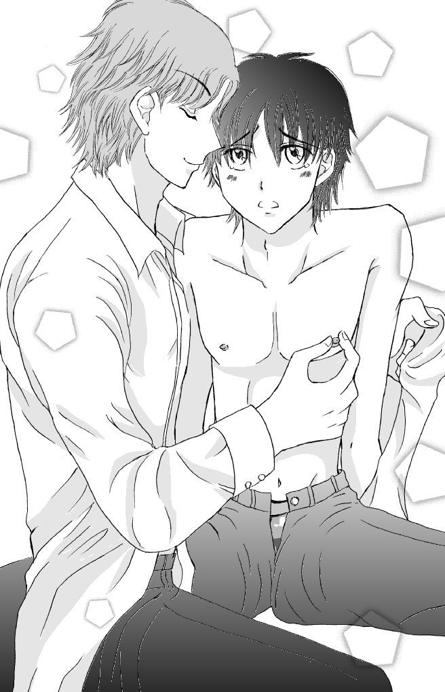

| あたたかな掌 (招福来猫) | |
| きよにゃ | |
| 招福来猫 (2016) | |
高校一年の悠真は、美しい小鳥遊に手を温められるうち、気持ちが揺れ動く。
もくじ
放課後、吉沢 悠 真 は入部届けを握りしめて美術室の入り口に立っていた。入部届けには自分の名前とクラス、出席番号を記入済みだ。これを美術部の部長に渡し、可能なら今日から入部させてもらうつもりだ。
思い切って美術室に入ろうと思った時、ふいに視界が暗くなった。
また立ちくらみだ。床にリノリウムの板が貼られているとはいえ、その下はコンクリートだろうし、このまま倒れたら頭を打って最悪の場合病院行きになってしまう。しゃがみこんでやり過ごそうとした時、扉がガラリと開く音が聞こえた。
「きみ、大丈夫？」
語尾が掠れている、穏やかなテノールが耳に届く。
「っ、はい......」
全く大丈夫じゃないが、見ず知らずの人に助けを求めるなんて迷惑なことは大人しい悠真には出来ない。
「しばらくじっとしていれば治りますから......」
青い顔でうずくまっていると両肩を引き上げられ、気が付いたら抱きかかえるようにして 立たされていた。
「少し我慢して。隣の校舎まで歩ける？ まだ保健の先生がいると思うから一緒に行こう」
「あ、あの......」
担がれるようにして右肩を抱かれる。恥ずかしいけれど気分が悪くて、なすがままになる。歩いているうちに脚に力が入らなくなってしゃがみこむと、テノールの声の主が負ぶってくれた。揺れる感触を覚えながら、思考が暗闇の中に消えていった。
悠真は県内でもレベルの高いこの高校に入るために、中二の冬から猛勉強した。通学が徒歩十五分と便利だし、何より生徒の意見が反映される自由な校風が魅力だった。勉強の甲斐あって無事合格できたが、自分の出来が悪いと気付いたのは入学してすぐの実力テスト後だ。
偏差値が五十もない。中学の時は中の上という学力レベルだったので、かなり傷ついた。英語のリスニングに苦戦して、上手く聞き取れなかったと近くの席の生徒に打ち明けると「うちの中学は英語が厳しかったから楽勝だった」とこともなげに言われて驚いた。周りも呼応するように「簡単だった」と言っていた。
以来、悠真は英語の予習復習を必ずするように心がけた。特に苦手だと自覚したリスニングはＣＤを繰り返し聞き、自分でも真似て発音し頭に叩き込むようにした。テレビで見た 「聞くだけで英語が話せるようになる」という教材が欲しくなったが、値段が高すぎたので諦めたくらいだ。
英語だけではない。もともと苦手だった理数系の教科も予習が必須だ。唯一、安らげるのが体育と選択教科の美術の授業だけという有様だから、自分は本当に落ちこぼれてしまったのだと思う。
初めて美術の授業を受けた時に、入り口に飾ってある絵が目に入った。大小様々なシャボン玉がふわりと浮いているようで、隅に女の子が描かれている。見ているうちに重力から解き放たれたような浮遊感に包まれ、温かさを感じた。びっくりする位勝ち負けのない世界は、日々クラスメイトと競争している悠真にとって新鮮だった。
人がいない時間を見計らってスマートフォンの待ち受け画面に登録し、勉強の合間にその絵を見てほっとした。悠真にとって、シャボン玉の絵は特別なものになっている。
去年県大会で優秀賞を獲ったというその絵の作者が現在三年生だと聞いた時は驚いた。てっきり卒業生の作品だと思っていたのだ。作者に会ってみたい気もするが、会わずにいた方が幸せなのかもしれないという気持ちにもなってしまう。
部活に入ろうかと思いついたのは一週間前だった。少し授業についていけるようになったし、部に入ればシャボン玉の絵を部活のたびに見られると思ったからだ。ゲームや漫画も好 きなので、美術部近くにあるイラスト部もいいなと思ったが、ほぼ全員が女子なのと、漫画タッチの絵が全く描けなかったのを思いだして却下した。入部届けの用紙をもらいそこねたまま五月の連休になってしまい、さすがに遅すぎると、今日重い腰を上げて入部届けを書いたのだ。
どれくらい眠っていたのだろう。
まぶたを開けると、白いカーテンに仕切られたベッドの上だった。重苦しかった気分はおさまり、すっきりとしている。開け放した窓から届く風に吹かれて消毒薬の匂いがしたので、ここは保健室だと思った。
誰かが近くにいる気配がする。おそるおそるカーテンを引くと、悠真の母親より十歳ほど若そうな養護教員が机から顔を上げてこちらを見た。
「あなた、新入生ね。寝不足で運びこまれる子が多いけれど、あなたもそうなのかしら。ゲームばかりしてるんじゃないの？」
養護教員の第一声は悠真のここしばらくの努力をまるで分かっていないもので、どっと肩が重くなった。
「違います......。勉強が難しいから、ついていくのに必死で」
最近体調が悪い。帰宅してから夜中までぶっ続けで勉強しているせいか、時々めまいもする。朝から寒気がしたり、突然気分が悪くなったりする。何か悪い病気かもしれないと思うが、今日のように休めば治ることがほとんどだし、母親に聞いたら「成長期だからじゃない？」と言われたので多分そうなんだろう。もし成長期のせいなら、多少体調が悪くなっても我慢する。背が平均身長に五センチ足りないことが悠真の悩みの種だ。出来れば百七十センチは欲しい。
「あら、ごめんなさいね。でも勉強もほどほどにね」
養護教員は申し訳なさそうに口元に手をやっている。失言したと思っているのだろう。
「念のため、熱を計ってもらえるかな」と体温計を差し出してくる。
「......はい」
必死に勉強しないとついていけないからしているのに、注意されて釈然としない。一所懸命頑張っているのに、損をした気になった。中学の時は親も教師も「勉強している」と言えば褒めてくれたのに。ここは中学とは違う場所なのだと、頭のどこかで納得した。
「親切な先輩が運んでくれたわよ。三年のタカナシ君」
「タカ......？」
「かっこよくて、学校の有名人よ」
そういえば、途中でしゃがみこんだところを背負われたような気がする。優しい掠れ気味のテノールしか覚えていない。「ピピッ」と体温計のアラームが鳴ったので、養護教員に差し出す。
「熱はなし。大丈夫みたいね。睡眠と食事をちゃんと摂って、出来れば通学の時間以外にも歩いたらいいわ。まだ部に入っていないんだったら、運動部にでも入ったら？」
部活と言われて思いだした。
そうだ。美術室の前で倒れこんだのだから、タカナシという人は美術部員だ。しゃがみこんだ時は気持ちが悪かったが、今はかなり良くなっている。帰る前にお礼を言いに行こう。
悠真はベッドから起き上がり、脱がされていた学ランに袖を通した。三年間着るからと母親が大きめのものを選んだので、今の悠真にはぶかぶかだ。真っ黒でまっすぐすぎる髪は、高校生になったからと初めて行った美容院で耳が出る程度にカットしてもらった。日本人らしい控えめな鼻、薄い唇。中学までしょっちゅう男女とからかわれた大きな瞳はコンプレックスのひとつだ。もっと幼い頃は「お人形みたいな子ね」と母親の友達から言われていたほどだ。
今は学ランを着ているからさすがに女子には間違えられないが、春休みに男女の友達数人と海沿いに行ってスケートボードをしていたら、年下らしき中学生に女と間違われてナンパ された。声変わりもしたというのにまだ女っぽいんだな、とがっかりした。
学ランの襟を正したあと、自分が全くの手ぶらなことに気が付いた。倒れた時に鞄を美術室の前に置き放してきたらしい。取りに行かねば。
「どうもありがとうございました」
養護教員に頭を下げて保健室を出ようとした時、扉がスラリと開いた。目の前には背の高い男子生徒が立っており、その手には赤いショルダーバッグがある。隅にビルのシルエットが描かれたタグが縫い付けられたもので、よく見れば悠真の鞄だ。顎を上げて、やっと男子生徒と目が合った。
明るいアッシュブラウンのくせ毛を耳の少し下まで伸ばした美形だ。日本人離れして彫りが深く、鼻筋が通っている。メンズのファッションショーにでも出てきそうで、欧州の香りがする。深緑のフレームの眼鏡から覗く瞳の色は純日本人よりも薄く茶色と緑が混じっているし、肌もピンクっぽい。 明らかに白人の血が混じっている。それに学ランでなければ成人していると思えるほど大人びている。どう見ても上級生。しかもこの落ち着いた感じから見て三年生だと思った。
「鞄を届けに来たんだけど。きみ、もう起きられたの？」
穏やかに微笑む口から紡ぎだされるのは、聞き覚えのあるテノールだった。やはり語尾が 掠れていて、女だったらセクシーだと黄色い悲鳴を上げそうな甘い声だ。すっと鞄を差し出されたので、おずおずと受け取った。
「あ......、ありがとうございます。先輩が俺を運んでくれたんですか？」
思わず先輩と言ってしまった。悠真を運んでくれたタカナシという人かもしれない。
「うん。顔色が少しましになったみたいだね。美術室の前でうずくまっていた時は、真っ白な顔してたから」
育ちがよさそうな上級生ににこにこと雲の上から微笑まれると、自分の失態が人の手間をかけてしまったのだと思い知らされていたたまれない。悠真はがばっと頭を下げた。
「は、運んで下さってありがとうございました！」
腰を折った拍子に、学ランの胸ポケットから記入済みの入部届けがひらりと落ちた。洋風美形がさっとかがんでそれを拾ってくれたかと思うと、じっと凝視している。
「吉沢悠真君......。美術部に入部希望？ それで美術室の前にいたのか」
「あ、はい」
「これを今受け取っていいのかな？ 僕は部長のタカナシだ、よろしく」
スッと入部届けを指の間に挟み、タカナシが言った。
「吉沢悠真です」
「今日は具合が悪いだろうから、部活は明日からでいいよ。じゃあ、また。吉沢君」
悠真はショルダーバッグを持ったまま、廊下に遠ざかっていく長身をぼうっと見送った。
（あの人、すごく綺麗だった。男の人であんなに洗練された美形って、初めて見た。外国人ぽくって、学ランが違和感あったなぁ）
ちょうど保健室の前を通りかかった女子二人が、タカナシの後ろ姿を見て騒ぎだした。
「ねぇ今の人、タカナシ先輩じゃない？ 相変わらずかっこいいね！」
「ほんと。見れてラッキーだったね。授業以外では実習棟でしか見れないって噂だけど」
タカナシは養護教員の言う通り、有名人らしい。女子の間では知られる存在なのだと思った。それに親切で優しかった。あんなに優しい先輩がいるのだったら、美術部でシゴキなどは存在しないだろう。
翌日美術室に入ると、部員達と一緒にいたタカナシが悠真に気付き、手を振った。
「ああ、吉沢君。来てくれたんだ。あとで皆に紹介するよ」
悠真は美術部を見渡す。石膏像が壁側に置かれ、絵を支えている楽譜立てのようなものが均等に散らばっていて、椅子が置かれている。大体は絵の具を使った作品で、そばに資料とおぼしき写真などがあった。
十人ほどの部員が集まった頃、自己紹介をするように言われた。男子がタカナシ以外に四名、女子は五名。今日いない者も含めると、悠真以外に全員で十二人いるらしい。部員達は各自巨大な楽譜立てのようなもののそばに座って悠真とタカナシを半円状に囲み、好奇心旺盛な視線をよこしてくる。
「一年Ｃ組、吉沢悠真です。絵は全くの素人です。中学の時は陸上部に入っていました」
「よろしくー、吉沢」
「分からないことがあったら、何でも聞いてね。私は中松」
「俺は角田」
その場にいた全員の名前を返されたが、人の名前と顔を一度に聞くとパンクしてしまう性質の悠真は、途中から覚えきれなかった。紹介が一段落したあと、ほかの部員達は作業に入り、タカナシが美術室を歩きながら説明してくれる。
「席は大体、先に来た人が好きな場所を取る感じかな。作品を作る上でどうしても光源が必要だとかいう場合は、優先的に譲ったりしてる」
一緒にいて気付いたのだが、女子部員達が遠巻きにしてタカナシをちらちらと覗いている。どうやら皆の鑑賞物という感じだ。
「はい」
「部としては週に三日、都合のいい日に出ればいいよ。僕は美大の予備校にも行っているから、水・木・金しか出ないんだけど」
「あ......、はい」
毎日出席する訳ではないようだ。勉強に力を入れたい悠真にとってはありがたい。
「絵の具代や画材は、部費が出るから月一回申請してくれたらいい。ちゃんと領収証をもらってほしい。今は皆、秋の県大会に出す絵を描いている。吉沢君は今日何も持ってきてないだろうから、部に置いてあるスケッチブックで石膏像でも描いてくたらいいよ」
「あの。先生は今日いないんですか？」
疑問に思ったことを尋ねてみる。顧問の教師の姿をまだ見ていないのだ。
タカナシがああ、と思いだしたように顎に手をやった。
「先生は今グループ展に向けて自宅で制作してるから、あまり来ない。どうしても聞きたいことがあれば、早い時間に職員室に行って質問した方がいい」
「そうなんですか」
部活というと中学で所属していた陸上部の印象が強くて、生徒の後ろから先生が叱咤激励しているというイメージがあったのだが、どうも美術部は違うらしい。ついでに絵を立てているつっかえ棒みたいなものの名前を聞くことにした。
「この絵を立てているやつ、授業では使ったことないんですが、なんていうんですか？」
「ああ、イーゼルっていうんだ。そういえば、授業ではあまり大きな絵を描かないから、使わないみたいだね。絵を支えて、描きやすくするために置いておくんだ」
「へえ。この部活に来るまで、知りませんでした」
「夏になれば部で合宿もする。僕はその頃には引退してるけど、次期部長に引き継いでおくから、行きたいところがあれば言ってくれたらいい」
タカナシがそう言うと、二年の男子がすかさず横から口を挟んだ。
「俺、千葉のランドがいい」
一人が茶化すと、ほかからも意見が飛び出る。
「私は大阪。アリー・ポッターエリアに行ってみたいなぁ」
「イーゼルが似合う場所でないとだめ。お前らの行きたいところは遊び場だろ」
タカナシが笑って却下すると、周囲からくすくすと笑い声が出る。部員達に慕われているのだろうなと思える微笑ましい反応だった。気さくなタカナシは部長にふさわしいと悠真も思う。人並み外れて美しいだけでなく、性格が明るい部長とそれを慕う部員達。楽しそうな部活だ。
和気相合と盛り上がるタカナシ達から離れた場所にいる男子がぼそぼそ話している声が、 耳に入ってきた。
「一年生か、久々だな」
「川口以来だな。真面目そうじゃないか」
悠真は川口という一年生がいることを知った。これから曜日が合えば顔を会わせることもあるだろう。川口のことが気になったが、入部初日から噂話に加わるのもためらわれ、石膏像のデッサンをしていたら夕暮れになっていた。
§
美術部に入ってから、悠真は初心者向けにと勧められた石膏デッサンを繰り返した。時々は自分の手なども描いている。
鉛筆デッサンは黒一色で描くものだと思っていたが、部室においてあるスケッチブックを見せてもらうと、鉛筆で描いた線を手でこすり、薄いグレーの効果を出している絵があった。玄人っぽいと思ったので、悠真もそれを参考にして灰色を出すようにした。白と黒しかない絵に灰色を入れると、急に絵が立体的になる。さらに練り消しゴムで鉛筆の線を消し白を入れると、絵が浮かび上がってくるような感じがする。
「......出来た」
悠真は数枚埋めたスケッチブックを見直し、鼻息を荒くする。
（うん、なかなかいいじゃないか。俺、かなり上手くなったんじゃないかな）
そういえば、部にシャボン玉の作者がいるかと思って皆の描いている絵を一通り見たのだが、それらしいものを描いている部員はいなかった。絵を描いているからといって、美術部員とは限らないのかもしれない。
入部から二週間ほどたった五月の終わり、タカナシに声を掛けられた。
「吉沢も何か作品に取り組んだらどうかな。県大会に出してみたらいい」
自分の作品。悠真はまだ、描きたいものなどない。ただ見えているものを写し取るのに精一杯で、どうすればいいか必死になっているだけだ。シャボン玉の絵のような「自分の世界観」があればいいのだが、頭をひねってもないものは出なかった。
これから夏になるのだから、涼しそうなものがいい。色々考えた末、題材は海にしようと決めた。以前水族館で買ったポストカードを自分の部屋から探しだし、その中からウミガメが泳いでいる写真を選ぶ。
放課後「これにしようと思います」とウミガメのポストカードを持ってタカナシに話かける。
「美術部の入り口に飾ってある絵みたいな感じにしたいと思っているんです」
そう言うとタカナシは一瞬驚いたように顔を上げ、顔をほころばせた。
「あの絵みたいにって言ってくれるの、嬉しいよ。描いた甲斐があった」
「え。タカナシ先輩があの絵を描いたんですか？ でもたしか、作者はことりあそびっていう名前だったと......」
「小鳥が遊ぶと書いて、タカナシと読むんだ。今部活でも静物デッサンをしているから、絵では分からなかったんだね」
「え。じゃあ......」
総毛立った。この人があの絵を描いたのか。いつも悠真を癒やしてくれたシャボン玉の絵の作者が今、目の前にいる。
（小鳥遊先輩の作品だったのか。......二週間近く一緒に部活していたのに、分からなかった）
あの絵の作者に会ってみたかった。それが以前親切に助けてくれた小鳥遊だと分かって驚いたが、自分があの絵にどれだけ思い入れがあるか伝えねば、という思いが湧き上がってくる。
ごくんと唾を飲み込み、口を開く。
「俺、あの絵にすごく助けられているんです。見ていると体がふわっと軽くなって......。楽になれるんです」
「楽に？ ......そんな感想はじめてもらった」
小鳥遊が首を傾げている。変なことを言う奴だと思われたかもしれない。なんとか自分がシャボン玉の絵をいかに大切にしているか言わなければ。
そうだ、と制服のズボンに仕舞っていたスマートフォンの待ち受け画面を見せてみた。
「勉強で疲れた時とか、これを見て和んでいます。俺のお気に入りなんです」
小鳥遊の薄い色の瞳が見開かれる。鼻の頭に皺が寄り、くしゃっと顔全体で笑った。
「こんなに気に入ってもらえるなんて嬉しいよ。描いてよかったな。ありがとう、吉沢」
悠真は胸をなで下ろす。待ち受けにしていたことを引かれないどころか、お礼まで言われてしまった。
（言ってよかった。喜んでもらえた）
「さっき、僕の絵みたいな感じにしようと言ってくれたけど」
小鳥遊は続ける。
「もっと自分の個性を伸ばした方がいい。吉沢のデッサンの時の力強いタッチ、僕はいいと思うから――」
「え。俺の？」
真顔で聞き返すと、力強く頷かれた。部室に置きっぱなしだった悠真の石膏デッサンを、知らないうちに見てくれていたらしい。
「素直な線だと思った。僕はああいうの、好きだよ」
「......！」
褒められたのだろうか。思いがけない言葉に、頬が紅潮する。小鳥遊が半分顧問のような立場にいることは知っていたが、自分を評価してくれ、こんなことを言ってもらえるなんて思わなかった。嬉しいけれど少しこそばゆい。
（何か言わないと。......何か）
しばらく心の中でごちゃごちゃ考え、やっと絞り出した言葉はとても小さかった。
「ありがとうございます。......お、俺、大会の絵も頑張ります」
「うん。吉沢は真面目に取り組む性質だから、きっと完成すると思うよ」
小鳥遊が言ってくれた言葉を、悠真は噛みしめた。小鳥遊は頼りになる。優しく励ましてくれる先輩がいることは、初心者の悠真にとってありがたいことだと思う。二学年離れているだけで、大人と子供くらい歳が離れているように感じる。自分も三年生になったら、後輩にこんなふうに優しく出来るだろうか。
今日はいい日だ。いつも自分を癒やしてくれた絵の作者が分かって、喜ばれた。
小鳥遊を知れば知るほど、いい先輩だと思えてくる。
三日ほどたった頃、美術部に行くと小鳥遊以外誰も来ていなかった。水道の蛇口と洗い場がある窓辺に立った小鳥遊が手招きをする。午後の光が差し込み、明るい茶色のくせ毛の周りが赤く染まっている。
「吉沢、ちょっと」
窓際へ近寄ってみると、初夏らしい眩しい日差しが、暑いくらいに感じられる。
「なんですか？」
「ちょっと頼みがあるんだけど」
少しためらうように視線をさまよわせたあと、勢いをつけて切り出された。
「急に失礼なこと言ってごめん。秋の大会用の絵に少年にも少女にも見える、中性的なモデルを使いたいんだ。前に吉沢を負ぶった時に気が付いたんだけど、あまり筋肉がついていないし、身長も伸びきっていない。こういう成長途中の体が描きたいんだ。出来れば吉沢にモデルをお願いしたい」
「モデル、ッスか」
目が点になる。悠真は特別容姿が整っているわけではないから、モデルを頼まれるとは思ってもみなかった。
「皆が集まる前の一日十分間だけでいい。指定したポーズをしてもらって、デッサンを取らせてほしいんだ。はじめは十分でもきついと思うから、五分間からでいい」
「あ、あの」
急な展開についていけず言葉を遮ると、断られると思ったのか小鳥遊が早口になる。
「僕は絵を完成させる秋まで部にいることにして、夏休みまでにデッサンを終えるつもりだ。吉沢の絵が忙しい時はモデルをしなくていいから」
小鳥遊の引退が秋と聞いて、もう少し一緒に部活が出来るのだと思いほっとした。
「......いいですよ。大丈夫です」
特に断る理由もないし、いつも癒やしてくれた絵の作者じきじきの頼みなんて、正直いって光栄だ。
「本当 !? ありがとう。助かるよ、悠真」
小鳥遊がほっとした表情で手を握ってくる。大きな暖かい手だと思ったが、同時に違和感を覚えた。さっき、小鳥遊は『吉沢』じゃなくて『悠真』と呼んだ。
「......え、悠真って？」
「あ、名前。吉沢よりも、悠真の方が短くて呼びやすいから、名前で呼んでいい？ 僕のことも琉 依 って呼んでいいよ」
「......それはちょっと。名前で呼んでくれていいですけど、俺から先輩の名前はハードルが高いです」
先輩を名前で呼び捨てにする後輩なんて聞いたことがないから、恐縮してしまう。
「俺は今まで通り小鳥遊先輩って呼びますけど、俺のことは悠真でいいです」
赤くなっているだろう顔を見られないように、うつむいた。
悠真は団地の階段に足をかける。今日言われたことを思いだしていたら嬉しさが徐々にこみ上げてきて、にやけた顔になっているのが分かった。一階から自宅の五階まで一気に駆け上がると自分の四畳半の和室にまっすぐ入り、ベッドにぼふっと音を立てて倒れこむ。中学に上がる時、どうしても欲しいと駄々をこねて買ってもらったスチール製のベッドは、すぐにギシギシと音を立ててしまう。
（小鳥遊先輩が俺をモデルにって......！ 俺みたいな体が描きたいって言って、俺の名前を呼んでくれて......！）
頭に血が昇り、耳まで赤くなっている気がする。いつもの体調不良であるめまいや立ちく らみも、今日は出てこなかった。
『ありがとう。助かるよ、悠真』
『僕のことも、琉依って呼んでいいよ』
小鳥遊の言葉が頭の中で何度も再生される。記憶の中の小鳥遊はきらきらと輝いて、悠真に笑いかけてくれる。
小鳥遊と悠真は、二学年違うだけとは思えないほど体つきが違う。おそらく小鳥遊は百九十センチ近い。もとの骨格から違うのだろうけど、自分が三年になっても小鳥遊ほど背が高くなるとは思えない。悠真は早生まれなせいか、いつもクラスで前から順に数えた方が早い背丈だった。父は百七十五センチあるかないかだし、母も悠真と同じ位だ。
（こんな低い身長嫌だと思っていたけど、先輩に必要とされるなんていいこともあるんだな）
上掛けを丸めて抱きしめ、脚をバタつかせた。頭に血が昇る感じがする。
（どうしよう。俺、今度先輩に会ったらちゃんとモデル務められるかな？ 髪、また切りに行った方がいいかな）
何着も洋服を引っかけたハンガーの脇にある鏡に向かって姿勢を正すと、黒髪に大きな目をした、いかにも純日本人という外見の自分が映る。洋画に出ていてもおかしくない小鳥遊 と並んだら、きっとアフガンハウンドのそばに控える柴犬みたいに間抜けに見えるだろう。
目を閉じてシャボン玉の絵を思いだす。日々の勉強で疲れた悠真にとって、上も下もない自由な世界を感じた。あの世界に今度は自分が描かれるなんて夢のようだ。
（どんなふうに描かれるんだろう。俺があの透明な絵の中に......。信じられなくなってきた）
悠真は綺麗で穏やかな小鳥遊に憧れている。見目麗しく、親切で温かな人柄だと思う。絵の才能が半端じゃないことも分かった。皆に好かれて、遠い世界の人だとさえ思えるのに、今度からその人のモデルになるなんて。
胸に手をあてると、かなり速い速度で鼓動が脈打たれている。
（想像しただけでこんなになっているのに、本人の前にモデルとして立ったらどうなるんだろう）
ああ、でも。今日は嬉しくって、眠れそうにない。勉強しないといけないと思うのに、頭の中は小鳥遊の映像ばかりで、全然手につかない。
（勉強......、いや、その前に落ち着くために腹筋でもしよう！）
ベッドの上で腹筋を二十五回ほどしたところで、少し冷静になってきた。
全然寒くない。それどころかエネルギーが余ってしょうがない。頭を使わなくていい勉強 方法を思いついて英語のスペルの書き取りをしたが、それだけで集中力を使い果たし、数学をはじめた時はまぶたが重くなってしまった。
週明けの水曜日、悠真は美術準備室で初めて小鳥遊のモデルを務めることになった。美術室ではほかの部員が来た時に気が散るからと、奥まったところにある美術準備室でデッサンをしたいと小鳥遊が言ったからだ。
準備室は美術室よりも物がごちゃごちゃと散乱し、壁にいくつも大きな額縁が架けられている。真ん中に大きな作業台が置かれ、何本も筆が刺さった珈琲の空き缶や生徒の提出した絵などが無造作に置かれていた。
「じゃあ、机の上に山座りになってくれるかな」
小鳥遊が提出物の絵を隅に追いやり、ポーズを指示する。机の上に登るので、靴を脱いだ。
「こうですか？」
「いや、もうちょっと腕を曲げてほしい」
こんなふうに、と腕を取られた瞬間、心臓がドキドキと鳴りだした。小鳥遊がさわったところから、熱がじんわりと広がっていく。
「タイマー置いておくね。五分たったら鳴るから」
デジタル表示の四角いタイマーを悠真の足元に置いた小鳥遊は、いつもと変わらない様子 で斜め向かいに置いた椅子に座り、鉛筆を動かしはじめた。
（俺、小鳥遊先輩に意識するなんて変だ。こんなこと、本当に続けられるんだろうか）
尊敬する小鳥遊に必要とされているのが嬉しくて、この頼みを引き受けた。けれど、腕をさわられたくらいでこんなに驚き意識していては身がもたない。安請け合いしなければよかった。
窓際にある水道の蛇口に目を向けると、西日が反射して銀色に眩しく映っている。
「あまり固くならなくていいから」
鉛筆を素早く走らせる音と、小鳥遊の声が聞こえてくる。
（冷静になろう、冷静に）
そう念じて脚を曲げた格好のまま、部屋の隅を見る。
（視線が合わないポーズでよかった。先輩のあの綺麗な顔で見つめられたら、今の俺なんて空気が抜けた風船みたいにふにゃふにゃになってしまうだろう）
そんなことを考えていられたのも、はじまって一分くらいだった気がする。
曲げた腕が震えてくる。まったく動いてはいけないのだろうか、それとも少しなら動いてもいいのだろうか。息をすることすら緊張して、必死で鼻呼吸をする。小鳥遊はこちらとクロッキー帳を交互に見て、黙々と悠真を描き写しているようだ。
（あ。腕が痛い）
時間の感覚が分からない。タイマーが鳴っていないから五分もたっていないはずなのに、何十分にも感じられる。肩や首って動かさないとこんなに苦しいんだな――とぼんやりしてきた頭で思った時だった。
「悠真、疲れたんじゃないか？ すごく緊張してる。少し休憩しようか」
小鳥遊が声を掛けてくれた。正直いって全身が悲鳴を上げていたので、ありがたく休ませてもらうことにした。左右の踵部分と、尻の周囲をマスキングテープで留められる。こうしておくと、テープを目印にして再びポーズを取りやすいそうだ。
「動いていいよ。今日は前倒れた時より顔色がいいね」
机から降りると「手が冷えてるけど」と言って片手にふれられる。さきほども思ったが小鳥遊の手は大きく骨張っていて暖かく、さわられると動悸がしてしまう。
「あ、昨日の晩腕立て伏せをしたからかもしれません。いつもは運動してないから。前にしゃがみこんだ時はありがとうございました」
「いいって。あの時は、美術室の前に知らない真っ白な顔をした子が座り込んでいたから、びっくりしたよ。血の気がなくて陶器で出来た人形みたいだと思った。今僕が助けなきゃ、この子は壊れるんじゃないかって思った」
幼い頃は人形のようだと評されることがあったが、今もあまり変わらないのか、と悠真は内心がっくりした。自分が弱々しく見えたのは仕方ないが、見知らぬ下級生を助けようとしてくれた小鳥遊は、勇気のある人なのだと思う。
「普段は運動しないんだね。......悠真はもしかしたら、冷え症なんじゃないかな」
「え、冷え症？」
冷え症というと、妙齢の女性やＯＬなどが患っているイメージがある。薬品やサプリメントによって作られたイメージかもしれないが、そんな症状を自分が持っているとは思いもよらなかった。あまりの驚きに固まっていると、小鳥遊が腕を組んで話しだした。
「年齢や性別が違うと思ったけど、うちの母親が似たような感じだ。運動嫌いで、冷たい飲み物や甘いものが好き。風呂もシャワーで済ますことが多くて、あまり湯船に浸からない。夏も冬も、すぐにエアコンを付ける」
（......全部思いあたる）
小鳥遊が言う特徴に、悠真はほぼ全部当てはまっている。そういえば、春になり暖かくなってから湯船にほとんど浸かっていない。風呂に入るのが面倒なのだ。いつも手っ取り早く済ませたくて、ほかの家族より早い時間にシャワーを浴びている。
「俺、高一なのに先輩のお母さんと同じ症状なんだ」
あはは、と苦笑いする。恥ずかしい。高校一年生なのに親の世代と同じ冷え症なんて、誰にも言いたくない。
「歳は関係ないよ。でも、なにか対策しないとずっと同じ症状のままだから気をつけた方がいい。実際湯船に浸かるようにしただけで、うちの母親はかなり良くなった」
「今日から湯船に浸かってみます。いいこと教えてくれてありがとうございます、先輩」
「悠真の手が冷たいから、今日はあと五分で終わりにしよう。もともと無理言っている上に、手先が冷えるって分かったからなんとかしないと」
そう言うと、小鳥遊は悠真の右手をさすりだした。両手で包むようにこすりあげ、時々はぁっと息を吹きかける。
「うちの母親がよくこうやってる。どう、暖かくなった？」
善意以外の何物でもない瞳に見つめられて、ドキンと胸が鳴った。何か返事をしないといけない。だけど心臓が喉まで持ち上がったようで、バクバクという心音が聞こえる。
（小鳥遊先輩は親切でしてくれているんだ。変に意識しちゃだめだ）
知らない間に手が汗ばんでいる。鼻の頭にも汗が浮き出ている気がする。なんでもないと伝えるために口を開くが、蚊の鳴くような声しか出なかった。
「は、はい。暖かくなりました」
（なったけど......。心臓が跳ねっぱなしだ）
小鳥遊が来る曜日になると、悠真は誰よりも早く美術準備室に来てモデルをするようになった。職員室で「美術部長に頼まれました」と伝えれば、鍵を貸してもらえた。
机の上に座って膝を曲げるポーズをすると、小鳥遊が鉛筆を走らせる。小鳥遊は何体か絵を描いてイメージを固めるのだと言って、クロッキー帳という速写専用の帳面に悠真を描いている。 今日は初日に座った大きな作業台に悠真が山座りになり、一メートル隔てて向かい合うような位置に小鳥遊が座っている。
小鳥遊が眼鏡のフレームを持ち上げて位置を正す。緑のエナメルが似合っていると思うが、せっかくの美貌を隠しているような気がして疑問が湧いた。
「先輩の眼鏡、もしかして伊達ですか？」
「かけはじめた小学生の頃はね。僕の目、緑と茶色が混じっていて変わっているだろう。小さい頃からほかの同級生と違うと言われて、指を指されてきたのが嫌だった。目の色を隠すつもりで眼鏡をかけはじめたんだ。でも中学に入った頃から本当に視力が落ちて、度が入ったんだけど」
異質なものを排除したがるのは日本人の悪いところだ。幼い小鳥遊は、ほかの子供達と違 うと言われて心を痛めたのだろう。悠真は心ない言葉を言った者を叱ってやりたい気持ちになった。
「ほかと違うものをすぐに除け者にしたがるのって、子供っぽい幼稚な発想だと思います。先輩の目の色は綺麗です。それを認められずに意地悪を言った奴の言うことなんて気にしない方がいいです」
そう言うと、小鳥遊は珍しいことを言われたようにぱちぱちと瞳を瞬かせた。
「......ありがとう。皆と違うと言われた時は、目の色が違う自分が悪いんだと思った。悠真みたいにはっきり綺麗だと言ってくれる人もいなかったから、ずっと自信がなかった」
そう言って、寂しそうに笑う。
「大きくなって女の子達に見た目がいいと言われるようになってから、大分救われた。悠真にもっと小さい頃に会えていれば、僕の外国人コンプレックスもましになっていただろうね」
眼鏡の奥の瞳が細くなり、悠真を優しく捉える。表面が潤んでいて、まるで宝石みたいだ。じっと見つめられているのが恥ずかしくなり、必死で別の話題を探す。
「あの。どちらの国なのか、聞いていいですか？」
「父がフランスの人。カタカナみたいな名前に決めたのも父らしい。将来日本国籍とフラン ス国籍、どちらでも選べるようにこんな名前にしたんだって言っていた」
たしか片親が日本人で生まれた子供は、二十二歳までに日本国籍と外国籍のどちらかを選ばなくてはいけないと聞いたことがある。
「小鳥遊先輩は日本とフランス、どちらを選ぶか決めているんですか？」
「僕は日本で育ったから、多分日本国籍をとると思うけど。......まだ分からないな」
「そうですか。まだ四年もありますしね」
留学などをするとまた気持ちが変わるかもしれないと言うと、そうなんだよ、と返ってきた。
「親に留学を勧められているけど、あまり気乗りしない。こう中途半端だと、逆に純日本風なものに惹かれるよ。悠真って日本らしい名前だね。悠々自適の悠に、真心の真。僕みたいに当て字じゃなくて、漢字にちゃんと意味がある。僕もそんなのがよかった」
うらやましそうに言う小鳥遊を見て、悠真はブッと吹いた。明るい茶色の髪とヘーゼル色の瞳。こんなに外国人の特徴のある人が和風の名前なんて、正直いって似合わないのだ。学ランを着ている姿だって、外国人がコスプレをしているみたいに見えるのに。
「す、すみません。......小鳥遊先輩は琉依って名前が似合ってます。いい名前です」
そう言うと、小鳥遊がありがとうと返してくれる。
「モデルさんに気を遣わせちゃったね。それに冷え症だって分かったのに、同じポーズを取らせて悪いな」
「大分慣れました。それに少しの間、じっとしてるだけですから」
悠真は顔を動かさないように答える。はじめは家に帰ってからも体の節々が痛んだが、慣れてくると力の抜き方が分かってきた。プロのモデルを使うと二十分間ほどじっとさせることもあると聞くが、小鳥遊は十分以上悠真を固定させない。悠真が冷え症だと気付いたから、配慮してくれているのだろう。
小鳥遊の役に立ちたい。初めて小鳥遊の絵を見た時、自分には描けない絵だと思った。独特の世界観を持つ者だけが描ける空間の中で呼吸する人物と調和した世界を、もう一度見たい。それに、予習復習の毎日で疲れていた自分にとって、オアシスのように安らげる絵に参加できることが嬉しいのだ。描き上げられる絵は、きっと悠真にとって宝ものになるだろう。写真を撮らせてもらって、大きくプリントして自分の部屋に飾るつもりだ。
「ピピッ」というタイマーの音で、悠真は我に返った。そっと小鳥遊の様子を窺うと、頭の中に残っている映像をすべて描きつけるように、クロッキー帳に鉛筆を滑らせている。
「悠真、ありがとう。もういいよ」
視線を上げずに口だけ動かしている。
「あ、はい......」
悠真は机から下りて、クロッキー帳に影が出来ないように気をつけながら小鳥遊の背後に立った。クロッキー帳に描かれている悠真は立体的で、顔もよく似ている。大きな目に控えめな鼻、薄い唇。髪の毛もトイレの鏡の前でなでつけた状態のまま、一本ずつ正確に描かれている。服の皺の陰影まで丁寧に描かれていて、そのまま作品として展覧会に出せるレベルの絵だ。悠真は十分間でここまで丁寧に描けないだろう。力量の差に愕然となる。
小鳥遊は集中しているのか、クロッキー帳から目を離さない。悠真は黙ったまま、小鳥遊の指が自分を描き終えるのを見守った。
「......悠真。まだ残ってたの」
気配に気付いたのか、小鳥遊が振り返って悠真に柔らかく微笑みかける。
入部してから、小鳥遊は目が合うと微笑む癖があると気付いた。はじめは自分だけに微笑んでくれているのかと思っていたが、「部長」と話しかけた二年の女子が小鳥遊に微笑まれて、ぽっと頬を染める現場を目の前で見てしまったことがあるからだ。その時、なぜかひどくがっくりしたことを覚えている。
「じっとしてると冷えるよ。......ほら、やっぱり」
左手をきゅっと両手で包んでさすってくれる。クロッキーのたびに手をさすられるので、 動悸がするもののかなり慣れてきた。小鳥遊は面倒見がいいのだろう。部員と部長という立場もあるのだろうが、はじめに会った時も見ず知らずの悠真を背負って保健室に運んでくれた。
「すみません。昨日湯船に浸かったんですけど」
以前アドバイスをもらって以来、時間を作って湯船に浸かるようにしている。手が冷えて勉強に集中できないこともあるくらいだから、早く治したい。
「そんなすぐに体質改善しないよ」
今度は反対の手を包まれる。こうやって手を暖められるのに慣れてきたが、相変わらず心臓がドキドキと音を立てる。正直いうと、小鳥遊と親密になっている事実が嬉しい。ずっと手を握られていたいという思いが湧き上がってくる。
「あと、悪くもないのに謝らない方がいい。感謝を伝える時は『ありがとう』の方が、聞く側も嬉しい」
「すみませ......、ありがとうございます」
「そうそう」
小鳥遊が画材を片付けながら、ふっと笑いだした。
「悠真みたいな、素直に言うこと聞いてくれる後輩がいてよかった」
「え。素直って......」
クロッキー帳を棚に仕舞った小鳥遊が、悠真の目を真正面から見つめる。また心臓が鳴りはじめる。
「そのままの意味。勘ぐったりひねたりしない、ものごとを受け入れてくれるってこと。皆、悠真みたいだといいんだけど」
ふう、と軽い溜め息をついている。部長として部員にアドバイスする時に苦労しているのだろうか。
悠真に向けられる小鳥遊の言葉は、優しく思いやりに満ちたものばかりだ。シャボン玉の絵を見た時に似た、暖かい何かで心が満たされる。作品は作者を反映しているとどこかで聞いたのは本当かもしれない。
あの絵の作者が小鳥遊のような人でよかった。小鳥遊と作品、どちらも好きでいられる。
モデルを務めたあと、悠真はトイレから部室に入ろうとした。すると、茶髪のツインテールを赤いシュシュで括った一年と鉢合わせた。派手な顔立ちにラメ入りグロスを塗った唇、スカートは下着が見えそうなほどのミニ丈だ。これほど短いスカートを穿いている女を、悠真はほかに見たことがない。
「あ、吉沢くぅん。小鳥遊部長、今日来てる？」
グロスをたっぷり塗った唇から甘えた粘っこい声が出てくる。週に三回、小鳥遊のいる曜日だけやってくるこの川口という女を見て、悠真はげんなりと頷いた。
「部長ぉ、川口来ましたぁ！」
美術室の窓側に小鳥遊の姿を確認した川口が走りより、今日も小鳥遊に一番近い席を陣取った。
席は特に決まっていないが、皆毎回同じような場所にイーゼルを構えている。だけどこの川口はそんなものお構いなしに、小鳥遊のすぐ隣にイーゼルを持っていき、部活の間中話しかけるのだ。
「ねぇ部長、ミントみたいな水色が欲しいんですけどぉ、コバルトに白を混ぜたいんですけどぉ、どう思いますぅ？」
「いいんじゃないかな」
描きかけの水彩画をちらりと見て小鳥遊が答えると、途端に川口が嬉しそうな顔をした。廊下側に座っている悠真からは、窓際にいる二人の様子が丸見えだ。小鳥遊は皆のものと女子達の間で決まっている空気の中で、一人抜け駆けをする川口に怒りと驚嘆を覚えてしまう。
「そうですかぁ？ あ、混ぜたら部長の言うように良くなりましたぁ、ありがとうございま すぅ。それと、少し明るさを出したいんですけどお――」
川口は体を乗り出して小鳥遊に質問を続けている。ずっとこんな調子で絡んでいるので、部の皆も迷惑そうな顔をしている。小鳥遊は困り顔だが、延々と続く川口の質問に律儀に答えてやっている。
こうやって何かするたびに質問されていては、小鳥遊の作業が進まないだろう。小鳥遊は三年生で、引退まで残された時間がわずかというのに、その時間を奪っている川口が憎たらしく思える。小鳥遊は部長だから困った顔をした後輩を無下に出来ないのだろうけど、悠真は川口が語尾を伸ばすたびに「ここは部活で、男漁りに来るなら別の場所に行け！ 小鳥遊先輩にさわるな！」と言いたいところをこらえるのに必死だ。
小鳥遊達から半円状に離れた場所で、隣り合った二年生が囁きあっている。
「部長も災難だな」
「あの女、どう見ても部長目当てで入部したな。その証拠に絵は全然進んでないし、部長が来ない日は部室まで来ても帰ってるもんな」
全く同感だった。川口が小鳥遊目当てだと感じているのは悠真だけではないのだ。
（どうして小鳥遊先輩ははっきり迷惑だと言わないんだ。誰が見ても川口は部活の邪魔になっているし、先輩も迷惑そうなのに）
それにさっきまでモデルを務め、小鳥遊と親しいはずの悠真よりも、川口が馴れ馴れしく接しているのが気に食わない。
困っている顔をしているのに拒否しない小鳥遊を見て、ある考えが浮かんだ。小鳥遊は下級生の女子に露骨に甘えられて、悪い気がしないのかもしれない。認めたくはないけど小鳥遊も男だから、川口の大きい胸やこれ見よがしに短くしたスカートから覗く太腿から目を離せないのかもしれない。
もしかして、小鳥遊はあの女のことが気に入っているのか。だから阿呆みたいな質問にもちゃんと答えてやっているのか。
「先輩、優菜の絵どう思いますか、先輩ぃ――」
手の先が冷えてきた気がする。遠くから聞こえる川口の語尾を伸ばす声が耳障りだし、なんだか真面目に答えてやっている小鳥遊にも腹が立ってきた。その日はウミガメの絵の下塗りをしたが、どんどん濃い色の絵の具を乗せていき、悠真の絵はおそろしく濁った絵に変化してしまった。
§
ある水曜日、悠真は美術準備室で椅子に座り、膝の上に手を置くポーズを取っていた。小鳥遊はすぐ斜め前でクロッキー帳に向かい、ハミングで鼻歌を歌っている。随分機嫌がいい。まだ美術室には誰も来ていないようだ。
「もう顔を描き終えたから喋ってもいいよ。退屈だろう」
「あ、はい」
何を喋ったらいいのだろう。川口についてひとこと言いたいが、小鳥遊は部員に質問されて、部長として誠実に答えているだけなのだ、と思い直す。今は悠真をモデルにして真剣に描いているのだから、川口のことなどわざわざ言わなくてもいいのかもしれない。それに、うるさい奴だと思われたくない。
しばらく考えて、小鳥遊の将来のことを聞くことにした。
「せ、先輩は美術系の大学に進むんですか？」
「うん。でも大学より、卒業したあとのことを考えてる。絵が売れて食べていけたらいいんだけど、そんなに上手い具合に行かないだろうから、美術の教員免許でもとろうかと思ってる」
「就職のことまで考えてるんですか......」
感心してしまう。悠真の姉はやりたいことを見つけるために大学に進学したほどだったし、 自分もまだ働く自分が想像できない。漠然と大学に行こうと思っているが、まだどんな学部が自分にとっていいかすら分かっていない。
「絵だと僕の見た目と関係ないから、絵で認められるのが一番なんだけどね。悠真も三年になったら嫌でも考えるよ。もし美術科に進むなら早めに美大予備校に行った方が有利かな」
「ありがとうございます」
「うん、なんでも聞いて。まあ僕も受験生だし、どこにも受かる保証なんてないから、大きなこと言えないけど。本当なら美大卒の人に聞くのが一番だね」
悠真はおそらく、美大の受験はしないだろう。美術部に入ったのは、単にシャボン玉の絵をしょっちゅう見られると思ったからだ。美術科には進まないと思ったが、小鳥遊の話す将来のことが眩しくて、自分のことを考えてくれていることが嬉しくて、会話を遮ることはしなかった。
小鳥遊が鉛筆を握り直し、悠真の足のあたりを注視しはじめた。楽しそうな表情が覗き、この人は絵を描くことが本当に好きなんだなと実感する。
「美大の予備校では静物画のデッサンばっかりで結構疲れるんだけど。悠真を描いていると、理想が形になりそうでわくわくする」
「そう言ってもらえると、モデルになってよかったと思えます」
思わず頬が緩む。小鳥遊の絵を一緒に作っているのだと思うと嬉しくなってしまう。
「はじめはすごく緊張していたのに、随分頑張って続けてくれているから、体の特徴を大分掴めたよ。ありがとう」
「そんなこと......。お役に立ててよかったです」
恐縮してしまい、動いてはいけないのに思わず首を振ってしまった。モデルに慣れてきた今では、はじめの頃のガチガチに緊張していた自分を恥ずかしく思える位だ。
「僕の目の色を綺麗だって、あそこまではっきり言ってくれたのは悠真だけだ。あれは嬉しかったな」
そうなのか。皆、美しすぎるものを見ると本当のことが言えなくなって、小鳥遊を遠巻きに見守っていたのかもしれない。
「小鳥遊は皆の鑑賞物」という女子達の暗黙の了解が窺い知れるが、きっと本人には伝わっていないのだろう。
「悠真はかわいいって言われるタイプなんじゃないかな」
「なっ......、なんで分かるんスか !? 」
唐突に話題を自分に振られ、思わず咳き込んだら小鳥遊が納得したような顔をしていた。
「やっぱり。目が大きいし、女の子みたいに小さいし。三年生を見慣れていると、一年生が 新鮮で幼く見えちゃうみたいだ」
「嬉しくないです、全然。俺、男だし。もっと背が欲しいです」
悠真は拳を握りしめて床を見つめる。背が低く、女っぽいのが悩みの種だから、女子のようにかわいいと言われて素直に喜べない。悠真にとって小さいことは高校の間に克服したい部分だ。
「気にしていたの。無神経なこと言ってごめん。ただ、僕にとっては『かわいい』は綺麗に匹敵する言葉なんだ」
そう言って体温の高い左手で、くしゃりと悠真の髪を撫でてくる。
「匹敵......？」
「僕は綺麗なものやかわいいもの、珍しいものが好きだから」
きっぱりと言い切られ、悠真は目を瞬かせた。
（先輩は......俺のことが好きって言ってる？）
小鳥遊が目尻を下げて微笑する。こちらに好意を持っていると分かる表情だった。春の暖かな日差しのようで、包みこまれるようだ。
もし、さっきの言葉が社交辞令ではなく小鳥遊の本心だとしたら、死ぬほど嬉しい。もちろん、外見に自信がない後輩を気遣ってくれているのだと分かっているが、背が低く幼く見 えても小鳥遊に気に入られるなら自分を好きになれる。そう思うと、ほんの少し勇気づけられた。
「ありがとう......。小鳥遊先輩」
「ん。そういえば、簡単なラジオ体操みたいな運動でも仕事の合間にするとましだって、母親が言ってた」
再びクロッキー帳に視線を戻した小鳥遊が鉛筆を走らせる。
「あ......、じゃあ、デッサンが終わったらやってみます」
タイマーが鳴ったあと、照れ隠しついでに洗い場と机の間の少し広い場所を見つけて手を振りはじめる。たしかラジオ体操第一はこんなはじまりだった。ふと小鳥遊の方を向くと、目がばっちりと合った。
にっこりと口の端を上げ、微笑んでいる。なんだか彼の発する空気が暖かだ。つられて微笑み返したあと、小鳥遊の笑みの理由を考える。
（小鳥遊先輩は目が合うと誰にでも微笑む癖があるんだ。勘違いしちゃだめだ）
癖だと分かっているのに動悸がしてしょうがない。悠真は急いで次の運動に移った。頬が熱くて仕方なかった。
美術部の活動を終え、自宅の団地に向かう歩道を歩く。あと二分で自宅のある棟に着くという時、小学生数人とすれ違った。その中に、ちゃんと歩けるのか心配なほど細い脚をしている少年がいた。
その瞬間、「もし自分以外の華奢な体つきの男が美術部に入ってきていたら」という考えが頭に浮かんだ。自分以外の男がモデルになったかもしれない。成長途中で中性的なら、女でもよかっただろう。
（もし俺以外の奴だとしても、小鳥遊先輩は同じように優しく接してくれただろうな）
分からないことを悠真以外のモデルに丁寧に教え、言葉遣いも注意してくれるだろう。
（小鳥遊先輩は優しくて才能がある、親切な人だ。部の皆が慕っている。川口だけが異常にまとわりついているけど）
もし川口みたいな態度の男がいたら、モデルにしただろうか。その男が自分と同じように冷え症だったら。あの大きく暖かい手でモデルとなった男の手を持ち上げてポーズを取らせ、冷えた手を暖めてくれただろうか。
（小鳥遊先輩なら、きっと誰にでもそうする。だから人望があるんだ）
だが自分以外のモデルに、小鳥遊の骨張った指先が同じようにふれるところを想像しただけで、頭の奥がじりっと熱くなる。ありもしないことを想像してこんな反応をするなんて、 どうかしている。
（俺はただの後輩で、先輩の手伝いをしているだけなのに。先輩が誰にさわろうと先輩の勝手だ。それに、男同士だ）
なのに、どうしてもそれが嫌だと思う自分がいる。
悠真は小鳥遊の姿を思いおこす。フランス人の父親の遺伝で色素の薄いヘーゼル色の瞳と、日本人ではありえないほど明るくウェーブのかかったアッシュブラウンの髪。彫りの深い目鼻立ちの彼が穏やかに笑う姿はきらきらと眩しいほどだ。
目が合うと微笑んでくれる相手が自分だけではないと気付いた時、軽いショックを覚えた。悠真は小鳥遊を慕いすぎているのだ。あの宝石のような薄い緑と茶の瞳で見つめられ、紙に彼の手で自分を描き写される。真剣な視線を感じるたびに、頑張ろうという気持ちと共に胸が高鳴る。
誰でもない、悠真自身を描いてくれることが嬉しい。今みたいに絵のためだけでいいから、真剣に自分を見続けてほしい――。それは過ぎた願いなのだろうか。
煌々と点けたままの明かりが眩しくて、悠真は目が覚めた。目覚まし時計を見ると、午前二時だった。解けない数式がやっと解けて、少し横になろうとベッドで休んだのがいけなかったのだろう。気が緩んで、いつの間にか眠ってしまったようだ。
「半端な時間に寝ちゃったな」
ぼんやりとだが、小鳥遊の姿が夢に出てきた覚えがある。明るい髪の色と、優しく包みこむような笑顔が思い浮かぶ。
「先輩の夢、見てた気がする......」
小鳥遊のことを思うと、心拍数が上がって幸せな気持ちになる。彼に言われた温かい言葉や思いやりを思いだして、顔がほころんでしまう。唯一、川口に関することを思いだすとむかっとするのだが。
次の瞬間、悠真は体に貼り付いた布の存在に気付いた。
「あ......っ」
下穿きには白い液体がべっとりと付着していた。寝ている間に夢精してしまったらしい。そういえば、最近それどころではなかった。勉強と部活で手一杯で、性欲を感じたことはな かった。
さきほど夢に見た小鳥遊の顔が頭にちらついた。もしかして、小鳥遊の笑顔でこんな反応を示してしまったのだろうか。
気付かないうちに欲望を吐きだしてしまった。それも、敬愛してやまない小鳥遊に。
思いあたることはいくつかある。冷え症な悠真を心配して、手を暖めてくれた。ポーズをつける時などは、そのたびに体にふれていた。クロッキーをしている小鳥遊から柔らかい視線を感じていた。
（俺は......）
さっと血の気が引く。とんでもないことをしたという罪悪感に苛まれた。
（先輩は親切で手を暖めてくれていたのに、俺はいやらしい期待をしていたんだ。先輩の指があたるたび、ドキドキしていた。近くにあの綺麗な顔が見えるのが嬉しかった。俺だけを見てくれたらいいのにって思ってしまった）
悠真は自分が、敬愛と欲情を一緒にしているだめな人間だと思い知る。そんなつもりではなかったと心はいうが、体の反応ははっきり小鳥遊を性欲の対象として見ていたと告げている。
「う......っ」
目に涙が滲んでくる。なんだか惨めで、情けない気持ちになる。清い気持ちで慕っていたつもりが、それは性欲の一部だったと誰かに糾弾された気分だ。
（俺は小鳥遊先輩のこと、好きで......。血統書付きの高価な洋犬みたいなあの人に憧れすぎて、どうかしてしまったんだ）
男同士なのに。
小鳥遊は冷え症の一年のことなど、きっとなんとも思っていない。
もし悠真がこんな反応をしていると気付いたら、小鳥遊はどう思うだろう。きっと呆れて遠ざかる気がする。悠真が尋常でない気持ちを抱いていると分かったら、気持ち悪くなるに違いない。
（そんなのは嫌だ。先輩に嫌われたくない。俺の気持ちは隠すんだ）
今度モデルをしたら、なんでもないように振る舞おう。意識している素振りなど見せてはいけない。誰の目から見ても明らかに、普通の後輩だと分かるようにしないと。
悠真は涙ぐみながら下着を取り替え、洗面所で誰にも見られないように手が痛くなるまで洗った。
§
間の悪いことに、翌日は小鳥遊のモデルになる木曜日だった。放課後、美術準備室で言葉少なにポーズを取っていると、斜め前の椅子に座った小鳥遊が鉛筆を置いた。クロッキーが終わったのだろう。
「ありがとう、悠真。終わったよ」
悠真は立てていた膝を机から落とし、床に降りた。同じポーズを取るのに慣れて来たが、自由になると体のあちこちが軋む。少し腕を伸ばして屈伸運動をしていると、小鳥遊が「冷えたんじゃないのか？」と言って手を包んでさすってくれる。しばらくそうしていたが、ふいに手を頬に持っていかれた。すり......と顎から頬骨のあたりまで悠真の掌をふれさせる。
「......せ、先輩？ も、もう大分暖まりましたけど」
ドキリと心臓が音を立てる。ほんの少しだけ伸びた髭がちりっとあたり、小鳥遊は美しいけれどちゃんと男なのだと思った。
「まだ冷たいよ。僕の顔の方がぬくいくらいだ」
「あの、でも......っ」
かっと顔が熱くなる。今まで頬で暖められたことなどなかったので戸惑ってしまう。
小鳥遊の目に、悠真は今までと同じに見えているのだろう。昨日の晩、小鳥遊の夢を見て 夢精してしまったと知ったら、どんな顔をするだろう。おそらく「悠真がこんなにいやらしい後輩だと思っていなかった」と言って軽蔑するに違いない。
小鳥遊の薄い色の瞳に、悠真は映らなくなる。きっとモデルもしなくていいと言われて、話すことも出来なくなるだろう。
（それだけは嫌だ。今まで通りに接してほしい）
だから、小鳥遊の前では大人しい後輩のままでいた方が、きっといいはずだ。軽蔑されるよりも、今まで通りの方がいい。小鳥遊への気持ちを気付かれないようにしないといけない――。そんな考えがぐるぐると頭の中で渦まく。
小鳥遊の声が聞こえてきて、急に現実に引き戻された。
「今度の夏休みに合宿があるけど、僕も記念で参加しようかと思っている。暑いけど熱海の温泉にでも行こうって提案してみようか。温泉に入ると血行がよくなるから」
「う......」
じわっと涙が出てきた。
（俺はそんな優しい言葉をかけてもらえるような人間じゃないんです。先輩が親切に言ってくれているのに変な夢を見て、顔さえまともに見られない）
その証拠にさっき頬に手をあてられてから下半身がじわじわして、股間が反応しはじめて いる。
（い、今だって半勃ちなのに......！）
小鳥遊と温泉になど行ったりしたら、裸を見られる。前を隠し続けられればいいが、手ぬぐい一枚なんて心もとない。それに完全に勃起してしまったら、手ぬぐいをかけてもばれてしまうだろう。そんな姿を見られたら、きっと呆れられ、苦笑される。男同士で風呂に入っているだけなのに欲情しているなんて普通ではないと、いぶかしまれてしまう。
そうしたらもう、今まで通りに小鳥遊と付き合うことが出来なくなってしまう。
それは嫌だ。小鳥遊と一緒にいたい。このままの関係を維持して、先輩と後輩の関係を続けられたらそれでいい。
「赤い顔してる。悠真、どうしたの？」
座ったままの小鳥遊に顔を覗き込まれ、悠真は心の中を見透かされた気になった。
「だめです。俺、先輩と風呂なんて、絶対行けない......っ」
プールだって危険な位なのに、裸の付き合いなんてとんでもない。もしかしてさっきの考えが顔に出てしまったのかとパニックに陥った時、強い力で手首を握りしめられた。
「い、いたっ......」
痛みに顔を顰めてしまう。
「悠真、なんで？」
小鳥遊が信じられないという顔をしていた。裏切られたような表情だ。
怖くなった。
普段は優しくて穏やかな小鳥遊が、血相を変えて悠真の手を掴んでいる。悠真だって信じられない。自分の言い方が悪かったのだろうが、ここまで小鳥遊の様子が変わるなんて、何かまずいことを言ってしまったのだろうか。でも今は、このまま手を握られていたら、もっとおそろしいことが起こる気がした。
「せんぱっ、離して......！」
掴まれていた手を思い切り振り払うと、勢いが強すぎたのか小鳥遊が椅子から転げて壁にあたり、その振動で壁に飾ってあった絵が落ちてくるのが見えた。
「先輩、あぶなっ......」
悠真が駆け寄るより早く額縁が落ちてきて、小鳥遊の頭に直撃した。
「ツ......」
小鳥遊が頭を押さえ背を丸める。
目の前が真っ暗になって、黒い渦に巻き込まれる感触がする。自分が突き飛ばしたせいで小鳥遊に怪我をさせてしまった。
（どうしよう、俺はなんてことを......）
顔から血の気が引き、思考が停止する。すべての動きが止まった。人は本当に困った時、動けないし考えがストップするのだと思った。
うずくまって痛みに耐えている小鳥遊が目の端に見えて、はっと我に返った。止まったままではいけない、とにかく怪我の様子を見なければと思った時、準備室の扉が開いた。
「せんぱーい、もしかしてここにいるんですかぁ？」
川口だった。しゃがんでいる小鳥遊を見て、さっと駆け寄っていく。その早さが悠真にはうらやましく思えた。まるでストップモーションでもかけられたようにゆっくりとしか動けない悠真に対して、彼女は機敏に動いている。
「頭を打ったんですか？」
川口がおたおたと小鳥遊に手を伸ばす。なんとかしようとしているのだろう。
悠真はのろのろと二人を遠巻きにする。自分が行くべきなのに、それが出来なかった。目の前の光景がまるでテレビドラマでも見ているかのように進んでいく。
「一体何があったんですか、先輩？」
「ああ、さっき額縁が落ちてきて......」
小鳥遊は突き飛ばされたなどとひとことも言わなかった。悠真を庇ってくれているのだろ う。そう思うと、胸がキリキリと痛んでくる。
「大変！ 血が出てますよ。保健室に行って診てもらいましょう」
川口が叫び声を上げる。まるで悠真が小鳥遊を傷つけてしまったのだとなじられている気になった。肺のあたりが重苦しい。こんなに苦しい気分になる位なら、殴り返された方が百倍ましだ。
小鳥遊を庇うようにして準備室を出ていこうとする川口についてゆくために、重い脚を引きずる。
「あ、俺も......」
「私がついているから大丈夫です。吉沢君はほかの部員にこのことを伝えて下さい」
川口が振り返り、なぜか勝ち誇ったように宣言する。おそらく小鳥遊を看病できるから優越感に浸っているのだろう。それがムカついたが、一人の怪我人に二人もついていくのは変なのかもしれない、と思い直した。
（本当は俺がついていかなくちゃいけないのに。だって、先輩を怪我させたのは俺なんだ）
川口と小鳥遊が準備室を出て行く姿を見届けたあと、悠真はしばらく動けなかった。まるで美術室に置いてある石膏像のように固まったまま、嫌な汗が滲み出るのを感じていた。
川口達が出て行くのと入れ違いに、二年生の部員が二人、美術準備室に入って来た。
「部長と川口、どうしたの？」
声をひそめて尋ねてくる。
「さっき額縁が落ちてきたから......。保健室に行ったんです」
「怪我をしたのは部長？」
ズキンと胸が痛んだ。もし数値で表せるなら、きっと自分のダメージはＭＡＸに近かったと思う。返事をしようと口を開くが、情けないほど覇気のない声しか出なかった。
「はい......」
「なんて顔してるんだ、吉沢。お前の方が真っ青だぞ。部長は自分の足で歩いていたし、きっとたいしたことないよ」
背を叩かれ、逆に気を遣われる。今の自分は傍目で見ても分かるくらいにおかしいのだろう。小鳥遊が今痛い思いをしているのは悠真のせいだ。皆で悠真を叱ってくれてもいいのに。そうされた方が、きっと楽だろうに。
そうだ。まだ詫びの言葉も言っていない。保健室に行って鞄を届け、小鳥遊に謝ろう。もうモデルをしないでいいと言われるだろうけど、ちゃんと謝りたい。悠真は準備室に置かれていた小鳥遊の鞄を持って駆け出した。
「あの、ほかの人に聞かれたらそう言って下さい！」
保健室まで走っていくと、中から川口が手持ち無沙汰そうに足をブラブラさせて出てきた。
「先輩なら先に帰ったよ」
「え」
「外科に行って脳波を診てもらうらしいよ。私も行くつもりだったけど、先生が付き添ってくれるって言ったから、やめたんだ」
「そ、そう......」
頭の奥でガンガン何かを叩かれている。外科に行くほどひどいということが、悠真を決定的に打ちのめした。自意識過剰になって小鳥遊を突き飛ばしたりしなければ、こんなことにはならなかった。小鳥遊に謝らなくてはいけない。ひどい怪我をさせてすみませんと、ひとことでいいから謝らなくては。
「その鞄、職員室にでも預けたら？ 私ももう帰るし」
川口は小鳥遊のいない場所では普通の話し方になっている。あの甘えた猫撫で声ではないんだな、とどこか冷静な頭で思った。そういえば川口はいつも一人で行動していて、誰か他の女子と一緒にいるところを見たことがなかった。小鳥遊を慕いすぎていたのは悠真だけではなかったのかもしれない。
学校からの帰り道、よく誰にもぶつからなかったと思うほど、小鳥遊が頭を打った時の映像しか頭に浮かんでこなかった。
（俺のせいで。俺のせいで先輩は――。もし脳になにかあって、受験できなかったら俺のせいだ）
頭の中で、何度も「あの時振り払わなかったら」という仮定法過去が繰り返される。
（先輩。......先輩）
いつものように予習復習をしようと教材やノートを並べたが、全く頭に入ってこない。数式を見ていても、頭を押さえてうずくまっている小鳥遊の姿しか浮かんでこない。
（今はもう家に帰っただろうか。遅くなったけれど、連絡を取ってみようか。いや、明日面と向かって謝った方がいいだろうか）
いつの間にかスマートフォンに手を伸ばしていた。はじめは部の連絡網になっているＬＩＮＥを使おうとしたが、皆に読まれるのはまずいので個別連絡のボタンを押す。画面をさわる指先が冷たい気がする。今まで悠真の手を暖めてくれた小鳥遊は、今頃病院にいることだろう。
『先輩、さっきはすみませんでした』
『大丈夫ですか？』
文章を打っては消している間に、気分が落ち込んでくる。ろくな文面が浮かばない。血が出るような怪我をさせておいて、今さら何を書いても言い訳にしかならない気がする。
どうすればいいのだろう。そんなことばかりを考えているうちに、夜の十一時になっていた。あまり遅くに連絡を取るのは迷惑になってしまう。
（そうだ、もう夜遅いから明日の朝一で三年の教室に行こう。誰かに小鳥遊先輩を呼んでもらって――）
小鳥遊に頭を下げる自分を思い描く。シミュレーションだけでもしておくと、心構えが出来るはずだ。胸がずっとドクドクと嫌な音を立てている。痛いような気もする。
（どんなに不格好でもいい。謝りたい。明日は早く学校に行って、小鳥遊先輩に謝ろう）
§
翌朝の始業十分前、悠真は普段は登らない階段を上がり、四階へ向かった。この学校は一階が職員室、二階を一年生が使い、学年が上がるごとに上の階へと配置されている。三年生は最上階の四階だ。
階段を上がりきった所には三年生しかおらず、じろじろと遠慮のない視線を浴びた。どこ から見ても一年の悠真は相当目立っていると肌で感じる。小鳥遊に謝りに行くためだから仕方ない。
（たしか、小鳥遊先輩は三年Ａ組だったはず）
Ａ組に向かうと小鳥遊はすぐに見付かった。廊下で三、四人の女生徒に囲まれ、楽しそうに話している。小鳥遊は窓際に立ち、悠真のいる廊下側を向いていて、女生徒達が半円状にとり囲んでいる。ただでさえ周囲から浮いて見える明るい茶色の髪に、真新しい包帯が巻かれている。あれは昨日悠真のせいで出来た怪我だ。
普段と変わりなく笑っている小鳥遊だが、額に巻かれた白い包帯が痛々しくて誇張でなく心臓が痛くなる。
（俺のせいで大怪我したんだ。ちゃんと謝らなきゃ）
早くごめんなさいと言って謝りたいけど、ちょうど女生徒達の陰になってしまい、小鳥遊からは悠真が見えないようだ。
「そんなことないでしょ、小鳥遊ってばー」
一人の女生徒が怒る振りをして小鳥遊の肩を軽く叩き、その場がどっと湧いた。悠真の姿などまるで見えていないようだ。笑っている小鳥遊の顔が女生徒の背中越しに見えた瞬間、胸に鋭い痛みが走るのを感じた。
「小鳥遊先輩と知らない女が仲良くしている光景なんて見たくない」という声が瞬間的に頭に浮かぶ。だが、それはどうしようもない現実だった。
（ああ、そうだ。綺麗で才能があって......。小鳥遊先輩は誰からも好かれるんだ。俺と接してくれたのも、たまたま理想の体型をしたモデルだっただけで）
小鳥遊の夢を見て無自覚とはいえ射精していた自分は、きっと彼のことを意識してすぎていたのだろう。
（あんなに綺麗な人だから、ポーズを取ってとさわられるたびにドキドキした。何か期待してしまったんだ。先輩は俺のこと、なんとも思っていないのに。俺は特別なんかじゃなかったんだ）
なのに勝手に舞い上がって、小鳥遊と自分が親しいような気になっていた。小鳥遊と話したりふれあったりすることが嬉しくて、モデルをする時がかけがえのない時間だと思っていた。
でも、もうあんなふうに親しく話すことなどなくなるだろう。
小鳥遊に怪我をさせてしまったから。悠真が小鳥遊を傷つけてしまったから――。
「あ、ねぇ。後ろ......一年？」
二、三人の女生徒が悠真の存在に気付き、こちらを振り返った。女生徒の声で分かったの だろう、小鳥遊も悠真に顔を向け、はっとした表情になった。
「......悠真」
今、はっきり小鳥遊と目が合った。どうしてこんなところにいるのだ、という顔をしている。昨日何度も小鳥遊に謝ることを想像したのに、すぐに謝罪の言葉が出てこない。喉がカラカラに渇いて、声が上手く出せなかった。
「悠真？」
次に聞こえてきた小鳥遊の声が普段と同じようだったので、悠真は女生徒の視線を感じながらも勇気を振り絞って声を出せた。
「あ......、先輩、昨日はすみませんでした」
しゃがれた裏声が出たが、今言わないとだめだと思い喋り続ける。
「俺、それだけ言わなくちゃと思って」
ぺこんと腰を折って礼をする。小鳥遊の顔が一瞬見えたが、お辞儀が早すぎてどんな表情をしているのか分からない。
それでもいい。とにかく謝って、自分のことを記憶から抹消してほしかった。
さっきまで騒がしかった女生徒が皆沈黙し、気まずい沈黙が返ってきた。あんなに小鳥遊の怪我のことばかり考えていたのに、今は名前も知らない女生徒達の前で晒し者のようにな っている自分が恥ずかしかった。想像ではもっときちんと謝るつもりだったのに、滑稽なほど短い言葉しか出てこなくて、誰でもいいから自分を叱ってくれと願ってしまう。
「も、もう授業が始まるから一年の教室に帰ります」
踵を返し、転がるようにして階段へ向かうと、背後から小鳥遊の声が追いかけてくる。
「悠真、待って！」
切羽詰まったような声だったが、今ここで振り返ってもきちんと謝れない気がする。
また今度ちゃんとしたところで謝ろう。そうしよう。――そう思いながら階段を駆け降りる。
「なに、一年？」
「小鳥遊、頭どうしたんだ」
三年生の声があちこちから聞こえてくる。早くここから去ってしまいたいと、階段を駆け降りる足が速くなる。
三階に着いたあたりで「悠真！」と名前を呼ばれたので反射的に振り返ってしまった。
次の瞬間、地上から一メートル上に浮いた小鳥遊が見えた。階段を数段飛び下りてふわりと床に着地する。
着地した小鳥遊を見て、驚きのあまりぽかんと口を開けると同時に、注意しなければ、と いう気持ちがわき上がってきた。
「あ......危ないですよ !? 脚でも折ったらどうするんですか！」
悠真の左手を握った小鳥遊が、ほっとしたような顔を見せた。
「やっと止まってくれた」
カーンカーンと始業のベルが鳴り、上の階から覗き込んでいた女生徒や三年の野次馬達が潮が引くように去っていった。
「少し話させて。今じゃないと、悠真が逃げてしまう気がする」
小鳥遊に握られている左手首が、いつもより熱いと気付く。もう逃げるつもりはないし、もしかしたら小鳥遊は熱があるのかもしれない。手を引っぱられたまま、二年生の教室を突っ切って実習棟へ連れて行かれた。
「美術室......」
シャボン玉の絵の前を通り、いつも部活をしている美術室へ先に入った小鳥遊が唇に指をあて、そっと呟く。
「内緒な。二年の角田から、昨日鍵をかけるの忘れたって聞いたんだ。悠真、ホームルームの間だけでいいから僕と一緒にいて」
「は、はい......」
教師に見付かったら困るからとカーテンをさっと引かれ、美術室が薄暗くなる。きちんと整列した椅子に座らされ、小鳥遊が上半身をひねるようにして前の席に落ち着くと、ようやく手を離してくれた。
嗅ぎ慣れた絵の具の匂いと、見慣れた美術室。しんとした無人の静寂に包まれると落ち着いてきた。美術室は小鳥遊と部活をした日々を思いださせて、胸が痛くなる。自分がひとことしか謝っていないことに気付いて、悠真は再び頭を下げた。
「せんぱっ、俺、ごめんなさい」
机に肘をつき、頭を伏せて詫びの姿勢を取る。
（ちゃんと謝らなきゃって、今がその時だ。先輩に怪我させてしまったのは俺だから、許してくれなくても謝らなくちゃ）
小鳥遊から声がかかるのを待っている間は数秒だったと思うが、重苦しい空気に息が詰まった。罪を背負っているという意識が時間を長く思わせる。
「悠真、気にしないでくれ。ただの事故だから、謝らないでいい」
いたわるような声と共に肩にぽんと手が置かれて、昨日からの長い苦悩からやっと解放された気持ちになった。
小鳥遊が怒っていなかった。それは何よりも悠真を救ってくれ、言葉が自然に口から出てくる。
「俺、先輩を怪我させてそのまま何もせずに帰ってしまって......。すみません。先輩は俺を気遣って温泉に行こうって言ってくれたのに、恩を仇で返すようなことを」
「大した怪我じゃない。二針しか縫ってないよ。正直あそこまで合宿を拒否られるとショックだったけど――」
拒否した理由を小鳥遊は知らないのだ。悠真が夢精したことも、ずっと小鳥遊を意識していたことも、憧れをこじらせて恋愛のような感情を抱いてしまったことも。それを言わないとちゃんと謝ったことにならないし、この際誤解は解いておきたかった。小鳥遊を慕いすぎての失敗だったと、明るく笑い飛ばしてほしい。
「ち、ちがっ......！ 違います。俺、先輩のこと、意識してました。モデルを頼まれた時、一緒にいられるって浮かれてた。手を暖めてもらう時、ずっとこうしていられたらいいのにって思ってた。温泉になんか入ったら、裸になってしまうから恥ずかしくて......一緒に入れないって言ったんです」
誰もいない美術室という場所のせいか、昨日からずっと考え続けていたせいか、自分の気持ちを口に出すと気分がクリアになってくる。
「小鳥遊先輩にはさっき話していた女の先輩達や、川口みたいな女の子の方が似合うって分かっているのに――」
何を言っているのだろう。これではまるで告白だ。けれど、口に出すことで自分の気持ちがはっきりしてきた。自分はずっと、小鳥遊に恋をしていたのだ。だが悠真は男だ。小鳥遊も男だから、この恋は成就するはずがない。
小鳥遊は冷え症の悠真の手を暖め、ことあるごとに気遣ってくれた。後輩の体調を気にしてくれただけなのだろう。ほかに意味などあるはずがない。悠真に朗らかに将来について語ってくれた。彼の放つ光はひたすら明るく、悠真が夢精した時に感じた薄暗い情念などとは、ほど遠いものだ。悠真だって、同性にこんな気持ちを抱けるなんて思ってもみなかった。同じ高校生男子とは思えないほど美しい小鳥遊だからかもしれない。
だからこれだけ言って、もうモデルは断ろう。気持ちを打ち明けた以上、小鳥遊も悠真の普通以上の思慕に気付いて気持ち悪いと思うだろう。それが普通だ。
もう充分だ。自分の気持ちを知られて、それが受け入れられるなんて思っていない。口から出た言葉は二度と戻らないが、今言った言葉を悠真は後悔していない。
「悠真が気にしているなら今言うね。――僕の好きな子は男だよ」
「え......」
唇が震える。誰のことを言っているのだろう。
「悠真みたいな、真面目でまっすぐな子が好きだ。真っ白な顔でうずくまる悠真を見た時、この子は僕が助けなきゃって気になった。頼まれたモデルに一所懸命に取り組むところを見てもっと好きになったし、僕の目を綺麗だって言ってくれて、すごく救われた気持ちになった。悠真をこれからも暖めてあげたいし、出来たらもっともっと仲良くなりたい。そうしてもいい？」
青天の霹靂だった。
小鳥遊は悠真の憧れの存在だった。シャボン玉の絵の作者だと分かり、モデルを頼まれた時は自分の背が低いことにさえ感謝し、喜びを噛みしめた。でも、たまたま条件に合致しただけだと思っていたのに。
「か、川口は......。ずっと先輩にくっついてきてる」
「もともと僕は女の子より、同性のほうが好きみたいなんだ。だから川口が何か言ってきても好きになることはない。あの子は描くことにあまり興味がないみたいだから、今度期日までにまともな作品を仕上げるように言ってみる。出来なければ、描く気のある者しか受け入れないって言って諦めてもらう。正直、周りの部員達もうるさくて集中できないって言っているし」
悠真を心配なままにさせておくのはいけないから、と淡く微笑む。
小鳥遊は本気なのだ。本気で悠真を好きだと告白してくれている。
「僕は悠真が思うよりずるいことを考えるし、悠真をもっと好きだよ。好きだとさりげなく言ったり、頬で暖めたりしてアプローチしてたのに、悠真は気付いてなかったんだね」
目からぶわっと熱いものが流れ出す。信じられなかった。
（先輩が俺を......。ずっと勝手に憧れているだけと思っていたのに、先輩も俺のことを思ってくれていたなんて）
十五年間生きてきて、望みが叶えられたことなどわずかだというのに、その中のひとつが両思いなんて嬉しすぎる。悠真は流れる涙をそのままにして、肩を震わせた。
「悠真？」
「俺、先輩が好きだ......。先輩に手を握ってもらうと体が暖かくなって、ほっとするんだ。いつも川口に相手しているのを見て、俺の先輩にさわるなって思ってた。さっきも女の先輩達に囲まれているのを見て、胸が痛くなった。手を暖めたりするの、俺だけにしてほしいって思って......うっ」
あとは嗚咽が続く。涙が止まらない。好きだと言われてから、小鳥遊が川口やほかの者に優しくしていた姿を見て胸が痛くなった理由が分かった。自分は女達に嫉妬していたのだ。 居もしない別の男子モデルにも、同じ感情を抱いた。
自分でもびっくりしたのは、女生徒に叩かれて笑っていた小鳥遊を見た時のショックだ。本人は愛想笑いのつもりかもしれないが、胸がえぐられるように痛んだ。あの姿を一瞬でも見ていたくなかった。それを言う資格などないと思っていたから、あの場を離れたようなものだ。
どうしてこんなに我が儘になってしまったのだろう。恋というものは、悠真をどうしようもなく嫉妬深いものに変えてしまった。
肩に置かれた手がそっと離れ、悠真の指先に遠慮がちにふれてくる。しばらく手を握られたあと、両手で頬をくるまれた。真正面に小鳥遊の不思議な色をした瞳が輝いている。
「せんぱ......」
「困らせてしまってごめんね。俺の恋人に、なってくれますか？」
「あ......。はい！」
小鳥遊が自分のことを「俺」と言ったのを、悠真はこの時初めて聞いた。
「今日は部活に行かずに、僕の家へおいで。授業が終わったら、保健室の前で待ち合わせよう」
「あ。でも、デッサンは......」
「今日はきっと、集中できない。悠真に気持ちが伝わって舞い上がってるから、落ち着いて絵に向かえそうにない」
部の奴らに言っちゃだめだよ、といたずらっ子のように片目を瞑って笑っていた。
§
小鳥遊の家は高層マンションの十一階だった。やけに広い玄関を抜け、毛足の長いラグが真ん中に敷かれたリビングに通された。
「片付いてないけど、適当に座って。何か食べるものを持ってくる。今日うちの母親、研究のレポートを上げる日だとかで夜遅いんだ。多分十二時くらいにならないと帰ってこない」
「は、はい」
小鳥遊がキッチンに消えていくのを見届け、悠真は部屋を見渡した。日が長くなったせいか、午後四時でも外が真昼のように明るい。リビングは真ん中のローテーブルに新聞が置いてある程度で、テレビと反対側に置かれた三人掛けのソファの上には何も置かれていない。綺麗に整頓されていて、まるで今日客が来ると分かっていたようだ。小鳥遊は「片付いていない」と言っていたが、悠真の家を掃除してもこれほど片付いたようにならないだろう、と 思った。
「悠真、おまたせ」
木目調のトレイに珈琲とチョコレートを載せ、小鳥遊がリビングに戻ってきた。頭に巻かれた白い包帯を見るたびに罪悪感が疼く。
「どうしたの？」
「頭の怪我......、痛そうだなって」
「今は痛くない。気にしないでいいよ」
小鳥遊の思いやりにほっとする。
ソファの真ん中に座っていた悠真は端に寄り、今この家にふたりしかいないと気付いてそわそわと落ち着かない気分になる。ショールームみたいな部屋に紛れこむと、自分がまるで余所者だという気になってくる。小鳥遊がこの部屋にしっくりなじんでいるから余計だ。
居住まいを正していると、隣に座った小鳥遊の手が近づいてきて、悠真の髪を撫ではじめた。はじめはおそるおそる、次第に愛おしむようにゆっくりと。
「せんぱっ...... !? 」
十センチほどの近さで、小鳥遊がこちらを甘く見つめながら髪を撫でている。それがくすぐったいような、急に接近しているのが恥ずかしいような気がして隠れたくなる。
「ごめん、悠真が僕の恋人になってくれるって聞いてから、嬉しくって。悠真はこうされるの、いや？ 迷惑？」
薄い茶と緑が入り混じった瞳が揺れている。否定されることをひどく恐れ、怖がっているように映った。
（小鳥遊先輩がこんな顔をするのって、初めて見る......）
拒否されるのを恐れていること自体がひどく意外で、まだ小鳥遊のことを全然知らないんだなと思うと同時に、彼を安心させなければと思った。
「迷惑じゃ......、ない、です。先輩の手は暖かいから、安心します」
照れ隠しに笑ってみせると、小鳥遊は驚いたように目を見開いたあと、ひどく余裕のある顔を見せた。
「じゃあ、僕も安心させてもらおうかな」
くすっと笑った小鳥遊の顔が急速に近づいてきて、背中に腕が廻される。胸が苦しいほどきつく抱きしめられ、羽根のように軽く唇がふれてきた。
悠真はまぶたを閉じられなかった。小鳥遊の薄い色の睫毛が綺麗に揃っている光景が目に焼き付く。映画やドラマのようだと思えるくらい、はっきりとした口付けの瞬間だった。
「あ......」
小鳥遊が柔らかく微笑んでいるのが視界いっぱいに映る。
好きだと言って、受け入れられた。さっきも、悠真が迷惑かどうか確認してくれた。いやとか迷惑かとか聞かれ、そうではないと言った上で口付けられた。だが慣れていない悠真にとって、正直いって不意打ちだった。
「悠真。僕と一緒にあったまろ？」
鼻先に見える悪びれない美貌が、蕩けるような甘い表情をしている。
「え......」
ふたりであったまる。それはもしかしてＨなことを指しているのかとあたふたすると、小鳥遊が手の指を絡めてきて立ち上がるように促す。
「僕の部屋に行こう。万が一誰か帰って来ても、鍵がかけられる」
手を繋がれたまま、夢遊病者のようにリビングを抜け、廊下を通って小鳥遊の部屋らしき板張りの間に案内される。大人が使うような幅と奥行きがある机に、参考書や美術大学の過去五年間の問題集などが背を向けて並べてある。背もたれに沢山通気孔が空いたオレンジ色の椅子が机に向かっている。セミダブルくらいのベッドは、窓側にヘッドレスト部分が向けてある。机を挟んで本棚とイーゼルが置いてあり、装飾らしいものは壁にダーツの的とカレンダーが貼ってある位だ。
ベッドの上には開きっぱなしの問題集があった。三年生の英語は一文がおそろしく長く、悠真には一読では読めきれなかった。隣のノートに書きかけの回答が置いてある。どちらも途中のページを開けたままで、いかにもやりかけという感じが伝わってくる。
「......これ......」
なんだか昨夜の自分の机を思いだす。悠真も問題を解こうとしたけれど、頭の中が自分を責める言葉で一杯になり、何も手につかなかった。そう思っていたら、問題集を片付けながら小鳥遊が話しだした。
「昨日、なかなか眠れなくって......。悠真に何か言うべきだったって気付いたのが、夜十時過ぎで。連絡するには遅いと思って問題集をやっていたけど、集中できなかったんだ」
やっぱり。小鳥遊も悠真のことを考えてくれていたのだ。
「俺もです。勉強しようと思ったけど、集中できなくて朝になってました」
ふたりで顔を見合わせて苦笑しあう。小鳥遊も寝付けなくて、同じような一夜を過ごしていた。それが分かると、苦しかった気持ちをふたりで分けあったような気持ちになった。
「悠真......」
ドアに鍵をかけた小鳥遊にベッドへと誘導された。右隣に座ったかと思ったら両肩にぽんと手を載せてきて、体ごと小鳥遊の方へ向けようとする。
（小鳥遊先輩......、何かする気だ）
悠真がさきほど感じた直感は当たっていた。今から行われる「何か」が具体的になんなのか分かっていないが、多分いやらしいことだと思った。悠真は一年前に女子と付き合ったことがあったが、キスを一回しただけの清い交際だった。それでも、当時はしただけで大人になった気がした。
（心臓の音がうるさい......）
隣に座っている小鳥遊に聞こえるのではないかという位、心臓がバクバクと音を立てている。
いつの間にか、さりげなく腰に手が回されていて、体全体がびくっと反応してしまった。
「......どうしたの、悠真？」
何か言わないといけない気になる。まだ早すぎる気がする。だって今日初めて互いに好きだと分かったばかりで、悠真に至ってはキス以上のことは未経験なのだ。昨日小鳥遊を振り払った理由も、まだちゃんと説明していない。言わなければ。
「あの、俺。この前先輩の夢見て、いやらしい反応しちゃったんです。でも、そんなこと考えてるなんて、自分はなんてことを無意識に考えてしまったんだろうって自分を責めてました。温泉合宿に行こうと言われた時に一緒に入れないって言ったのは、先輩の前だときっと 勃っちゃうから、恥ずかしくて。それに先輩はＨなこととは無縁みたいで、こういうことするなんて想像もしてなかったっていうか......。い、意外で」
「なんだ、そんなことだったの。僕なんて、悠真で何回も抜いてるよ」
小鳥遊は今度の試験範囲でも言うかのように、さらっとすごい単語を口にした。
「ぬ、抜いてっ...... !? 」
聞き間違えではないだろうか。小鳥遊の口から聞けそうもない語句が飛び出して来た。
「大体、モデルになってもらった晩にはしてたよ。だって悠真、かわいかったから。デッサンだけじゃもったいなくって」
かぁっと頬が熱くなる。小鳥遊は以前、綺麗なものやかわいいものが好きだと言っていた。かわいいと言われるのは、小さいと明言されているようで、悠真にとっては複雑なのだけれど。いや、そんなことより。
（先輩が俺をおかずにしてそんなことを......！ しかもそれをあっさり言っちゃうんだ！）
悠真だって小鳥遊本人の口から聞かないと、きっと信じなかっただろう。本人から聞いても、いまだに我が耳を疑っているというのに。 自分と同じように、小鳥遊に憧れている者に言ってやりたい。この人もちゃんと人間でした。食欲と睡眠欲と、性欲を持ち合わせていたのだと。
信じがたくて顔をまじまじと見ていると、真剣な顔をした小鳥遊が鼻先がふれあうほど近づいてきた。
「この際悠真が持っている僕の幻想を全部壊さないと、悠真は僕を理解したことにならないよ。僕が十八歳の男だって分かってもらわないと」
男......。悠真だって男だ。だが、小鳥遊の言っている意味はおそらくベクトルが違うのだろう。単なる性別ではなく、その性が求める欲望のことを言っている。
肩に置いた手に力を込められた。
「絵や記憶だけじゃ足りない。今ちゃんと悠真を僕のものにして安心したいんだ」
「だって、先輩のものって......俺達、男同士なのに。何にもならないでしょう」
男女のセックスなら、動画で見たことがある。興味が高じて、これまで何度か見てしまった。警告が出ているウィンドウを無視して見た映像は、男性器を女性のそれに出し入れするものだった。
接近してくる小鳥遊からのけぞるような格好で反論すると、くすっとおかしそうに笑われた。まるで、目の前に正解が転がっているのに気付かない愚か者に対するように。
「......なにがおかしいんスか」
なんだか馬鹿にされているようでむっとしていると、人差し指を背側から尻の窄みにあて られた。
「男同士でも出来るんだ。悠真のここに、僕の性器を挿れたい」
ぐらっ、と世界が歪んだ気がする。心因性のめまいかもしれない。ショックを受けすぎると人間こんな反応をするんだと思ったまま、一ミリも動けなかった。
ひと呼吸置いたのち、やっとのことで頭に浮かんだ感情を口にする。
「だめです、汚い！」
「汚くないよ、悠真のなら。悠真にふれるたびに想像してた。僕を受け入れてくれる？ 悠真」
想像もしていなかったところを使うと聞いて怖じ気づいているのに、小鳥遊は全く手加減せずに迫ってくる。
（誰だ、この人は。俺の知っている小鳥遊先輩じゃない。神聖なくらいに美しい先輩がこんなことを言うなんて信じられない）
視界が小鳥遊で一杯になるほど接近された。小鳥遊は瞳が潤んでいて、なんだか熱があるような顔をしている。
「今家に帰したら、悠真は真面目な子だから、僕の受験のこととか気にするだろう。受験も大事だけど、ここ二か月の間ずっと悠真のことばかり考えていた。モデルになってくれた悠 真の人柄を知って、もっと好きになった。悠真が僕のことを好きじゃなきゃ、黙っていようと思っていた。でも悠真が僕の恋人になってくれるって言ってくれたから。だから、いいよね？」
小鳥遊の瞳にわずかな水がたたえられ、呆然とした悠真の顔を映す。
説得されているのだろうか。頭がかっと熱くなって、何も考えることが出来ない。「いいよね？」と尋ねられるのは、九割方肯定の返事を期待しているのだろう。
「あ......。だって怪我するかもしれないし、こ、怖いし！」
見つめられたままでは、魔法にかけられてイエスと言わされてしまいそうで、必死で目を逸らす。麗しい小鳥遊がこんなことを言うなんて、いまだに信じられない気持ちでいると、小鳥遊がすっと離れ、机のスツールからワセリンの容器を取り出してきた。
その容器は見たことがある。姉が冬場、ハンドクリームがわりに使っている石油系の油脂だ。融点が低く、冬でも肌になじみやすいと言っていた。
「これを挿れるところに塗らせてもらうから、痛みはないと思うよ。柔らかくして、慣らしてから挿れる。悠真が怖がるようなことはしない」
小鳥遊が安心させるように微笑む。
まだ事態について行けなくて、小鳥遊の胸に手を伸ばして突っ張った。
「そんなっ、まだ......。今日好きって分かったばかりなのに！」
だからだめだと言おうとした時、思い詰めたような声が聞こえた。
「僕は悠真が好きで、欲しいと思ってる。それだけじゃ足りないかな」
悠真はこの時ようやく悟った。小鳥遊から言われた言葉は、悠真が一番欲しかったものだ。
川口に嫉妬した時、小鳥遊にこう言ってもらいたかった。だけど小鳥遊は皆と同じように優しく接してくれるだけで、その他大勢と悠真の違いなんてなきに等しかった。
『小鳥遊先輩の絵のモデル』それだけがこの二か月間、ほかの者より小鳥遊と親しいのだと喜びを感じられた点だった。
悠真が好きだと先に言わなければ、これほど小鳥遊にアドバンテージを取られることもなかっただろう。だが一日でこんな超展開になるとは思いもよらなかった。小鳥遊のことを意識していると告白したら、小鳥遊も悠真を好きだと言ってくれた。自分でも嘘だと思えるくらいの奇跡の確率で、告白を返してくれた。ずっと憧れていた存在に認めてもらい、思いが通じた。こんなことはテストで満点を取るより希有な確率に違いない。
もう、これでいいのかもしれない。好きな人に愛を告白して、その先に待っているものを要求されても、断る理由なんてない。怖いだの初めてだの言っていては、先に進めないだろう。そしてそれはいつか克服しなくてはいけないものだ。
気付かないうちに心の底で望んでいた言葉が小鳥遊の口から紡がれる。
「悠真が好き。......好きだよ」
甘く掠れたテノールで囁かれ抱きすくめられたまま、ベッドにふたりとも沈み込んだ。
「怖くないから。痛くないようにするから。僕に任せて、悠真」
「小鳥遊先輩......」
まるで子供をあやすように、耳元で優しく諭されている。
これから彼を好きでい続けるなら、きっと避けては通れない道だ。彼の望むことで悠真の出来ることなら、なんでも叶えてあげたい。だから尻に性器を挿れるなんて怖いけれど、受け入れようと思った。
「怖くないように......して。小鳥遊先輩」
広くて逞しい胸にしがみつき、出来るだけ小さな声で言うと、抱きしめる腕に力が込められた。
「嬉しい、悠真。大好きだよ」
人気洋菓子店の包装紙をめくるみたいに丁寧に、詰め襟とシャツを脱がされ、悠真は制服のズボンだけでベッドに仰向けになった。壁側の悠真に向かって小鳥遊が膝をつき、シャツをはだける。全開した襟の間から覗く胸筋がうっすら盛り上がっていて、すごくセクシーだ。
男の色気というものを感じる。自分にはきっとないだろう、大人の雄だという色気――。
小鳥遊が眼鏡を外し、ヘッドボードにカチャリと音を立てて置いた。眉を寄せ、目を眇めている。仰向けになったまま、そうやって見つめられた。
「先輩......いつもと雰囲気が違います」
「眼鏡外すと変かな？」
「いえ......、かっこいいです」
眼鏡をとった小鳥遊を初めて見たが、もともと整った容姿に垢抜けた美しさが加わる。目を細める姿がいつもと違い、綺麗な人が睨むとすごみがあるんだなと、妙なところで感心した。
小鳥遊が悠真の剥き出しの胸に視線を移す。おそらく乳首を見ているのだろう。かなり長い間見つめられて、視線で焼かれてしまいそうだと思った。
「悠真のおっぱい何度も想像していたけど、本物はずっとかわいいね」
「せ、先輩......、そんなに見ないで」
身をよじると、小鳥遊の声が聞こえてくる。
「ごめん、眼鏡がないとよく見えないから――」
視力のせいにされた。悠真がこういう色事は初めてだというのもあるだろうが、かなり長い間注視されている気がする。
「お、俺はもう逃げませんからっ」
小鳥遊が乳首から目を離さないような気がして、言ってしまった。
ふっと笑う息がして、小鳥遊の肩が上下する。さきほどまで見つめるだけだった乳首に手が伸びて、あっという間に摘まれてしまった。
「こうしても逃げない？」
「え、あ、あ......っ」
かあっと頬が熱くなる。今、自分は何をされているのだろう。乳首をいじられているような気がするが、その現実を直視する余裕がない。ただ、小鳥遊がこれ以上ないほど真面目な表情で悠真の視線を捉えている。
「今からちゃんと僕のものになってくれる？」
真剣に問うてくる男は、文句なく美しかった。明るい髪に午後の陽光が差し、はだけたシャツから覗く胸筋が悠真に非日常を思い知らせる。
悠真は顎を引き、こくこくと何度も頷いた。
今から小鳥遊のものになる。肌を合わせ、尻に性器を受け入れるのだ。
覚悟は出来た。それにあれほど憧れていた小鳥遊の願いだ。叶えてあげたい。
「悠真......」
小鳥遊は乳首から手を離さず、親指と人差し指で引っぱったり転がしたりしている。軽く力を入れられると、はじめは柔らかだった乳首が硬く尖ってきて、息が段々荒くなってくる。
「あ、ふぁ......っ」
うずうずするような、焦れったい気持ちになる。なんだろう、この感覚は。
（や、だ。なんか俺、変だ。胸をさわられて変な声が出てる。女じゃないのに、いじられておかしくなってる）
「せ、先輩......っ」
助けを求めて名前を呼んでも、小鳥遊はキスをせがんできたと勘違いして、熱っぽい瞳で口付けをくれただけだった。

「ん、ふっ......」
口付けが深くなる。小鳥遊の舌が悠真の固く閉じた唇を割るようにして入ろうとする。少し開けると、一気に舌が口の中に侵入してきた。
「――っ！」
こんなキスは友達から又聞きしたことしかない。きっと大人がするキスだ。唾液が口の中でまとわりつく。他人の舌が熱く、ぬるついているという事実を悠真は今日初めて知った。
小鳥遊と悠真の年齢は二歳しか離れていないのに、もっと離れている気がする。なんだかすごく自然な動作で、ついていくのに必死になってしまう。舌を絡められたから、こちらも絡めるものなのかと返すと、思いっきり口腔内を吸われてしまった。
「ふぁ......っ」
息の仕方が分からない。口付けに必死で応えると頭がぼうっとなってくる。きっと脳に酸素が行き届いていないのだろう。口の端から吸いきれない互いの唾液がこぼれている。それが顎を伝ってツッと鎖骨の方に流れる感触にさえゾクゾクしてしまった。
小鳥遊は口付けをやめる気がないようで、仰向けになった悠真に覆い被さるようにして腰をぐっと押しつけてきた。股間に硬いものがあたっている。
（どうしよう。喋れないし、どうやって苦しいって伝えればいいんだろう）
朦朧とした意識の中でくちゅくちゅと音を立てて柔らかい舌を食みあう行為は怖くないし、むしろとても気持ちがいい。そのことに気付いたら、はじめはなんともなかったのに段々下腹部がむずむずして――、勃ってしまった。
（だめだ。先輩と密着しているのに。すぐに気付かれる）
股間にあたっている小鳥遊のものは、とっくにこわばっている。それに気付いてはいたが、自分が勃起しているのを知られるのがこの上なく恥ずかしかった。
（先輩が気付きませんように。キスに集中してこっちのことに気が回りませんように！）
顔が熱い。なかば祈るような気持ちで舌を絡ませていると、小鳥遊がすっと顔を引いた。
「悠真のも......、かたくなってきた」
嬉しそうな声と共に、ズボンの上から性器を愛おしむように撫でられていた。
その瞬間、ヤカンが沸騰したみたいに一気に頭へ血が昇り、喉から情けない声が出てしまった。
「やだ......ゃあ。見ない、で......」
嫌々と首を振る。他人の前で勃起しているだけでも恥ずかしいのに、それを指摘されてしまった。しかも敬愛する大好きな人に。
消えてしまいたい。どうしてこんな反応をしてしまうのだろう。
「恥ずかしがらないで。悠真が気持ちよくなるとこ、もっと見たい」
羞恥のあまり涙さえ浮かんできた気がするのに、小鳥遊は悠真を揶揄したり笑ったりしなかった。
「もっと......？」
泣きじゃくりながら聞き返す。今日ここに来てからあったことは、驚くことばかりだ。小鳥遊が自分に欲情していて、彼のものにしたいと言って。――気持ちよくなるところを見たいと言って。どれも昨日までの小鳥遊とは違う。だから戸惑ってしまうのも仕方ないのかもしれない。
小鳥遊が手をついて上半身を起こした。ギシ、とスプリングが軋む。
「僕が悠真を気持ちよくさせているって分かって嬉しいんだ。だから恥ずかしがらないで、もっと見せてほしい」
「見せる......」
衝撃的なひとことだった。悠真が隠したい、恥ずかしいと心に秘めていた感情を、隠さないでいいなんて言われるとは思いもよらなかった。気持ちいい姿を見て嬉しいと言われるのは、正直救われる思いだった。自分が抱いていた常識とは違うけれど、小鳥遊がそう言って くれることはとてもありがたい。
小鳥遊の要求することは、毎回悠真の予想と全く違う。もっと突き抜けて斜め上を行っていて、驚くことばかりだ。きっと、もっとほかにも悠真の知らない面があるのだろう。
「は、い......」
涙目で答えたら、そっと近づいてきた唇が涙を吸い取ってくれた。
「そう。いい子だ」
ズボンを下着ごとさっと下ろされ、脚から抜かれた。押さえつけられていた己の性器が反り返り、飛び出してくる。小鳥遊の喉がごくりと鳴る音がはっきりと聞こえた。
（先輩は見せてほしいって言ってくれたけど、やっぱり恥ずかしい）
上を向いて真っ赤になっているだろう、悠真自身。小鳥遊はシャツをはだけてはいるがズボンをちゃんと身につけているから、余計に悠真だけがふしだらな裸体をさらしている気がする。
小鳥遊がゆっくりと悠真を跨ぎ、再び覆い被さってくる。眼前に迫ってきた小鳥遊に唇を奪われ、また舌の攻防を繰り広げているうちに口付けを解かれた。
「さわらせて？ 悠真のここ......」
「あ......」
こくんと頷くと、傷つけることを恐れるように、小鳥遊のゴツゴツした手がそっとふれてきた。竿の形をゆっくりと確認され、くびれから先端部分を何度も優しくこすっていく。不覚にも、自分でするより百倍気持ちいいと思ってしまった。
「ふ、あっ......」
他人から大事にされて受ける愛撫というものが、こんなに悦楽をもたらすものだと悠真は知らなかった。小鳥遊に迫られなければ、これからも知らないままで過ごしただろう。
さらに先端の割れ目をそっとなぞられる。敏感な部分だと分かっているからだろうか、ひどく優しいタッチに泣きそうになった。
（恥ずかしい。恥ずかしいのに、もっとしてくれたらいいのにって......思ってしまう）
「あ......、あっ」
眦から涙がこぼれ、喉の奥から焦っているような声が洩れてしまう。予想がつかない愛撫に、次はどうされるのかと期待する自分がいる。
「悠真、かわいい」
悶えたままでいると、ちゅっとついばむように口付けられた。小鳥遊の愛情あふれる瞳に見つめられていると、こんなはしたないことが許されていると思える。
「僕も......」
小鳥遊が穿いていたズボンを寛げ、悠真の手を導いていく。その先には悠真のものより太めの陰茎が脈打っていた。
「悠真に煽られた。一緒に気持ちよくなろう？」
小鳥遊に跨がれた状態で自分のものと小鳥遊のそれを重ね合わせられると、嫌が応にでも大きさの違いが分かる。ちらりと覗き見ると、小鳥遊の性器は竿が浅黒く、悠真のピンク色のものよりも成熟している。太さも長さも若干小鳥遊の方が上で、同じ男として少し悔しいが仕方ない。背の高さも頭一個分は余裕で小鳥遊の方が上なのだと自分に言い聞かせる。
陰茎同士こすられる感触は手とは違い微妙に柔らかく、温度が似通っていて気持ちを高揚させてくれる。根元からこすられて火が点いた体の反応は止めようがなく、気持ちよさに歯止めがかからない。どんどん高みへと追い上げられていき、思わず声が出そうになる。このままだと小鳥遊の前で達してしまいそうだ。
「やだ、出るぅ、やぁ......っ」
「いいよ。イって、悠真」
ぎゅっと目を瞑る。目の前が真っ白になった瞬間、悠真だけ放出してしまった。すっきりした感じがあって股間を見ると、小鳥遊の手に悠真の白い精液がべっとりと付いていた。
「......っ！ ご、ごめんなさい。先輩の手、汚した」
（穴があったら入りたい。俺の出した白いのが先輩の手にかかって、きっと生ぬるくって......！）
恐縮し慌てふためいている悠真を見て、小鳥遊がふ......っと軽く息を吐いて微笑んだ。全く怒っていないようでほっとする。それどころか嬉しそうだった。小鳥遊は落ち着いた様子でヘッドボードからティッシュペーパーを取り、悠真の先端に付いたままの白いものを拭うと、額にちゅっとキスをしてくれた。そして大切な秘密を打ち明けるように耳元でそっと囁いた。
「悠真がイく顔、かわいかった」
かあっと顔中に血が集まるのが分かった。耳が熱い。きっと顔も蛸のように赤くなっているだろう。いや、顔だけではなく、全身が真っ赤になっている気がする。
でも、気持ちがよかった。この前寝ている間にしてしまった不本意な射精とは違う。同意の上での、快感を追った末の射精だ。
好きな人の前で射精して褒められることになるなんて、悠真は知らなかった。隠さねばならないと思っていた性への後ろめたさを、生まれて初めて肯定されたようで嬉しくなり、ふにゃりと笑った。
「小鳥遊先輩。......ありがとう」
「喜んでくれて嬉しいけど、まだ終わりじゃないよ。今からが今日の大事なところだ」
ベッドの隅にあったクッションを腰の下に入れられ、頭の血が下がってゆく。
今から――。今から小鳥遊と「する」のだと思うと、少し緊張して体が強ばる。ワセリンの容器に小鳥遊の手が伸ばされ、油脂を塗りつけた指が双丘の奥にひそんでいく。秘肛にふれた指がゆっくりと一本、中へ侵入する。油を纏った小鳥遊の指が少しずつ悠真の入り口になじんでゆく。
「悠真。痛かったら言って」
「い、痛く――ないです」
「答えるの早すぎ」
くすくすと笑いながらもう一本指を増やされ、後孔を拡げられていく。小鳥遊の顔が少し上に移動した――と思ったら、窄まりに熱を帯びたものがひたりとあてられた。大きな雄は一度も放出していないせいか、硬さを維持したままだ。悠真が見上げると、小鳥遊は花が開くようににっこりと微笑んだ。
「悠真。少し力んでもらっていい？ その方が挿 入 りやすいって聞いたから」
「は、い――」
力を込めて息んでいると、ワセリンで拡がった後孔に熱くて硬いものが挿入ってくる。
「ふっ......、うう」
ものすごい違和感だ。本来こうやって使う器官ではないから、無理をしているのがよく分かる。
（でも、先輩の......だ。信じられない。俺、先輩と繋がろうとしてる）
信じられない。昨日は後悔ばかりだったのに、今日はこうやって体を繋げようとしている。まさかこんな展開になるなんて、悠真も思ってもみなかったのだけれど。
どんどん奥に小鳥遊が挿入り込んでくるうちに、走り続けた時のような浅い呼吸しか出来なくなっていく。
「は、は......っ」
（どうしてこんなに苦しいんだろう。全力疾走した時のような息の上がり方で、まるで呼吸の仕方を忘れたみたいだ）
股を広げたまま、頭上の小鳥遊を仰ぎ見る。彼も必死な顔をしていて、苦しげに眉を寄せている。縮れ毛がジャリッと後孔の周りにあたった気がしたので、思い切って声を掛けた。
「先輩、はいった......？」
「全部挿入ってるよ。悠真の中、きつくて熱くてやばいくらいうねってる。悠真は......、苦しそうだね。ごめん」
「へ、いき......です」
本当はさっきからずっと息が整わなくてぜいぜい言っているし、後孔の違和感はただ事ではない。それは小鳥遊から見ても分かっただろう。
だけど、小鳥遊に余計な心配をさせたくなかった。半分は小鳥遊が気持ちいいならいいし、もう半分は自分も小鳥遊を大好きだからこうなってよかったんだと思う。
無意識のうちにいやらしい夢を見て夢精して、それを必死で隠そうとしたが、その時点で小鳥遊に好きだと伝えればよかった。自分の中で妄想を膨らまし続けるよりも、好きな人と思いを通じ合わせ、確かめあう方がいい。だから今日、小鳥遊に体を求められて結果的に正解だったのだと思う。
「小鳥遊先輩......。好き」
「僕も大好きだよ、悠真。悠真の中、想像より柔らかくてみっしりしてる。こんなに気持ちいいと思わなかった」
小鳥遊が「動くよ」と言って腰を前後に揺さぶりだす。圧迫感に驚くが、奥の方へ挿れられると気持ちがいい。
ふと小鳥遊の頭に巻かれた白い包帯に意識が向いた。包帯を見ると小鳥遊はやっぱり怪我人で、自分がそんな状態にさせたと分かって胸が締め付けられる。
「俺、昨日は言葉が足りなくて......。ごめんなさい」
手を伸ばして包帯をさわる。昨日彼が押さえていた、怪我のところにあたらないように気を付けた。
「一緒に風呂に入りたくないって言ったのは、勃つのが分かるから恥ずかしかったんだろう？ もう聞いた」
「でも。先輩、痛い？」
「今は痛くないし、見た目より小さな傷だよ。大したことない......っ」
そう言い終わり、呼吸を荒らげた小鳥遊に勢いよく口付けられた。舌を絡められたので、必死に絡め返す。小鳥遊は腰の動きを止めようとしないから、悠真が追いすがらないと口付けが続かない。貫かれたまま口付けを続けていると、喋るなと言われている気がする。けれど悠真は謝らずにはいられなかった。
「ごめんなさい、先輩。ごめんなさい......」
小鳥遊がどっと疲れた顔をして律動をぴたりと止めた。はぁはぁと息を整えながら、眉を寄せて悠真を射すくめる。
「悠真......、もう謝らないでいいから。っていうか、これ以上謝るといじめたくなる」
「えっ」
「悠真が泣いてやめてって言っているのを想像して、もっとひどいことしたくなるのを今必死で抑えてる。だから謝ると逆効果だよ」
「せんぱい......」
気付かなかった。謝罪のつもりだったのに、そんなことにも欲情されるなんて。小鳥遊は悠真が思うよりずっと大人で、想像もつかないようないやらしいことを考えているのだ。
「せっかく悠真の中だって感動してるから、もっと愛のある言葉を言ってほしいな。......謝るかわりに、僕を好きだって言って」
両手の指をすべて絡めてきた小鳥遊が、耳元で掠れた声を出す。それは反則といってもいいくらいに官能的で、心拍数が一気に上がった。
「す、好き......」
遠慮がちにつぶやくと、今度は幼子に問いかけるような甘い調子の声で尋ねてくる。
「誰のことが好き？」
「先輩が好きだ。小鳥遊先輩っ......」
悠真は叫ぶ。小鳥遊先輩が好きだ。俺はこの人のことが、ずっと好きだった。窓を開けて周囲に言って回りたい気分だった。
うっすらとまぶたを開けた小鳥遊が満たされたような笑みを浮かべ、さらに要求する。
「下の名前も呼んで？ 悠真。僕の名前は琉依だ」
「琉依......っ、好きだっ、琉依せんぱい......っ」
何度でも、何百回でも言える。彼が好きだと。感極まったせいで潤みきった世界に手を伸ばすと、手の指をすべて絡めた状態のまま口付けをくれた。
「悠真......、悠真っ」
小鳥遊が悠真の名を呼びながら、綺麗な顔を歪めて腰を穿ってくる。絡めていた手を片方だけ外し、悠真のものもこすりあげてくれた。見たこともない光景なのに、今自分はがむしゃらに求められているのだと理解した。
（ああ。俺、今先輩とＨしてる......）
「悠真、今は僕のことだけ考えて。僕も悠真のことしか考えないから」
唇にしゃぶりつかれる。小鳥遊の口の端からこぼれる唾液に西日がきらきらと反射して、なまめかしく映る。
「先輩......」
こすりあげられた陰茎が再び勃ち上がってしまう。恥ずかしいが、さきほどもっとこういう姿を見たいと言われたことを思いだし、これでいいんだと思い直す。
小鳥遊が悠真の性に関する固定観念を解放してくれた。今、悠真はとても自由だ。
小鳥遊が奥に性器をねじ込んでくる。硬く尖ったような感触さえする太いものに貫かれ、軽い悲鳴のような声が喉からこぼれてしまう。
「ひ、あ......っ！」
何度も奥を穿たれ、頭が煮えたぎるように熱くなった瞬間、悠真は二度目の高みに上り詰めた。性器から白濁が散ってゆき、きっと小鳥遊のズボンを汚してしまっている。
次の瞬間、避妊具越しに小鳥遊が射精したのが分かった。どろりとしているだろう精液と小鳥遊の大きな性器は、悠真の中にしばらく入ったままだ。どくどくと注がれる体液を受け止め続けている間、小鳥遊を感じることができて幸せだった。
「ふぅ。......悠真、意識して締めてるの？ ねじ切られそうだ」
額に汗を浮かせた小鳥遊が、すべきことをしきった満足げな顔で微笑んでいる。
「ち、ちがっ......！」
意識などしていない。今自分は無意識のうちに小鳥遊自身を締め上げていたのかと分かって、顔が真っ赤になる。勝手に反応する体が恨めしいが、喜ばれているように感じて誇らしかった。
小鳥遊がシャツを脱ぎ、使った避妊具の処理をしにベッドから立ち上がった時、悠真は気 だるい倦怠感を覚えた。まぶたが落ちそうになって初めて、疲れたのだと気付く。後孔にはなにかを挟みこんだ感触が残っていて、じんじんとして温かい。
（小鳥遊先輩とＨした名残、だ）
ひどく幸せな気持ちになる。そうだ。くたびれて疲れて眠い感じも、幸せだ。
「悠真」
制服のズボンだけ穿いた小鳥遊が、ベッドに横たわったままの悠真を覗き込み、眉を下げて微笑みかけてくる。窓を背にして逆光になっているから顔に影がかかり、汗が浮かんだ額が凄絶に色っぽい。そう思っていると、かがんだ小鳥遊に唇を奪われた。
「ん、ん......っ」
今日初めて舌を絡めるようなキスを覚えたというのに、小鳥遊が上手いせいか受け入れることはとても気持ちがいい。舌同士のぬるついた感触が広がり、目を閉じると頭の中がそればかりになってどこか遠くへ行った気分がする。とても不思議だ。
口付けを解かれたあと、小鳥遊に縋るような格好で悠真は切り出した。
「俺、先輩が好きだ......。先輩に暖められるのと、ほかの奴にされるのは違うと思う。こんなことするの、俺だけにして」
肌を重ね終わってから、自分以外の誰かと小鳥遊がこんなことをすると一瞬想像して、耐 えられないと思った。悠真にとってこれだけは言わないと安心できない、譲れない点だ。一体どんな返事が来るかと不安になったが、小鳥遊は明るく微笑んでくれた。
「あたりまえだよ。悠真にしかしない」
ほっと胸をなで下ろしていると、
「僕の恋人は心配性だね」とつぶやくのが聞こえた。恋人という響きにこそばゆくなり、もじもじとシーツを掴んで照れくささを誤魔化す。床に散らばった服を着ようとすると、小鳥遊が「ねぇ」と声を掛けてくる。
「今日、泊まっていきなよ。悠真と離れたくない」
「だめです。今日こそ帰って勉強しないと、本気で落ちこぼれる」
邪険にしているつもりはないが、昨日もまともに勉強できなかった。せめて今日くらいは、予習だけでもしておかなければ。
「じゃあ、どこかでご飯でも食べよう。それから大きな通りまで送っていく。もう暗くなってきているし、悠真はかわいいから心配だ」
小さいという意味を含む「かわいい」だけが余計だ。そう思ったのが顔に出ていたのだろう、ごめんごめんと謝られた。
ファミレスで夕食を摂ったあと、小鳥遊は手まで繋いで商店街の夜道を送ってくれた。
正直いって、悠真もしばらく小鳥遊と一緒にいたい。けれど誰かに見られたらどう説明したらいいんだろう、と繋いだ手を見つめると、にこりと麗しく微笑まれた。
「もう暗いから、通り過ぎる人がいても手を繋いでいることに気付かれないよ」
「は、い......」
気付かぬ間に顔に血が昇る。
携帯電話屋の前を、ふたりで通り過ぎた。昼間は外に出て勧誘している社名入りのジャンパーを着た店員が、終業の時刻だからか忙しそうにパソコンに向かっている。それを一緒に眺めていた小鳥遊が、握った手に力を入れ進行方向を向いたまま話しだす。
「大学に入ったら、東京に出て一人で暮らす予定なんだ。悠真も大学生になったら、同じ部屋で暮らそう。出来れば、それからもずっと一緒にいたい。誰の目も気にせずに、悠真を愛したいから」
（あ、愛したいって......！）
体中の血液がまた、頭をめがけて昇ってきた。今日、小鳥遊と体を重ねた映像が一気に脳内で再生される。小鳥遊の欲情した掠れ声や、はだけたシャツから覗く胸筋。長距離を走りきったような自分の息づかい、好きだと叫んだこと。だめだと思うのに、そういったものが どんどん頭の中で再生されてしまい、手に汗がじわりと滲んだ。
「それは......。愛といえば聞こえはいいけど、今日みたいなことをずっとするという意味にも聞こえます」
こほんと咳をしてたしなめるように言うと、小鳥遊がけろりとした顔で答えた。
「まあ、半分そうだね。でも、抱きしめあったり、キスしたりするだけでも気持ちが伝わるって分かっただろう？ 僕は悠真に毎日そういうことをしたい」
ある意味尊敬したくなるほどの潔さだ。悠真の中の小鳥遊像がどんどん崩壊してゆく。
（全く全然、これっぽっちも、恥ずかしがらずにこんなこと言えるんだ......！）
俺の小鳥遊先輩が、綺麗な小鳥遊先輩がこんなに開けっぴろげに愛情を打ち明けて、恋愛中心の考え方をするなんてと震える思いだった。
何か別のことを言わねばと視線を逸らし、商店街のさらに上を見上げた。スモッグで鈍く煙った夜空に、目視できる二等星以上の星が散っている。
「大学かぁ......」
まだ学部などは決めていないが、大学には行こうと思っている。小鳥遊ほどの才能がないから美大は無理だが、近くの大学くらいなら入れるかもしれない。
「が、頑張って先輩の近くの大学に入ります」
そう言うと、小鳥遊がほっとした顔をした。
「嬉しい。悠真、約束だよ」
シャッターが下りた店の前で立ったまま、頬にちゅっと軽いキスが降ってくる。
「ちょっ、こんなところで......！」
咎めるようにキッと小鳥遊を見るが、にっこりと邪気のない笑みを返されて怒る気も失せてしまう。
悠真の憧れの王子様は、両思いになった途端これでもかというほど積極的な人に変身してしまった。普段は恋愛など関心がないように見えるが、実際付き合ってみるととんでもなくのめり込むタイプらしい。恋愛が人生の中でとても重要な位置を占めていて、男同士肌でふれあうことに何の抵抗もなさそうだ。半分外国の血が入っているせいなのだろうか。
「素の先輩って、こんな人だったんだ......」
「そうだよ。悠真、これからよろしくね」
呆れる声を気にもとめないように、小鳥遊が掌をきゅっと握ってきた。
「あの絵は完成させるよ。大好きな子を描いた特別な一枚になるからね」
悠真を愛しいと思ってくれている表情が見える。優しい瞳に見つめられ、大きなものに包まれた気持ちになる。掌を握り返すと小鳥遊の温もりが伝わってきて、暖かな気持ちが流れ 込んでくるようだ。
指先はもう冷えていない。小鳥遊の熱が心地良い。
商店街の上に星が輝いている。悠真は満天の星空を見て、小鳥遊が描き上げるだろう浮遊感のある絵を思い浮かべる。きっとその絵は、悠真にとってもかけがえのない一枚になるだろう。
【完】
こんにちは、きよにゃです。この作品は小説同人誌三冊目として発表したものです。
初の高校生ものに挑戦しました。大好きな先輩に怪我をさせてしまい、Ｈ中に必死で謝る主人公が描きたかったのです。先輩の方は全然気にしていないのに、主人公は泣きながら懸命に謝っているという設定に萌えてました。
書いてみたら、主人公の悠真が延々と悩む話になりました。いつも心理描写が少ないので、今回は思ったことを削らずにほとんど入れてみました。くどすぎるかと心配でしたが、チェックして下さった方に聞いたところ、これくらいがちょうどいいと聞いてほっとしています。
乳首をいじっている絵が最後のほうにあるので、今から読むかたはご留意下さい。また、後日談などをサイトにて公開していますので、よろしかったらどうぞ。
読んで下さった皆様、ありがとうございました！
きよにゃ
創作サイト「ここにいるから。」http://kiyonya.xii.jp/